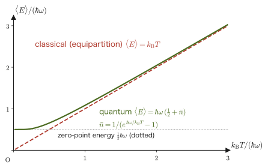
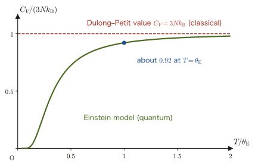
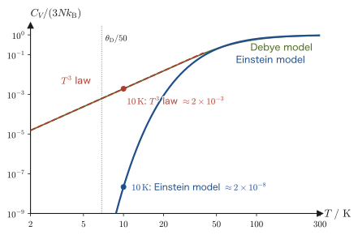
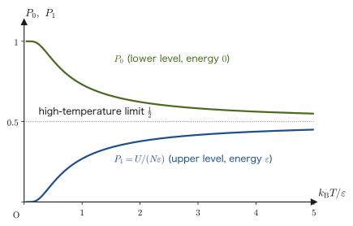
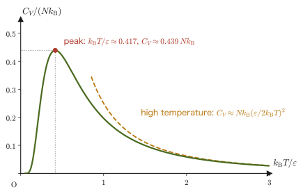
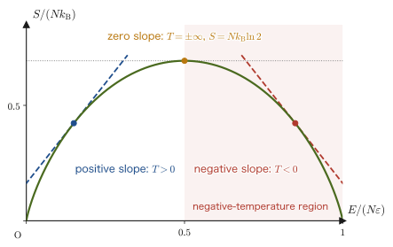
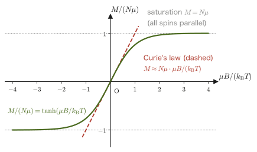
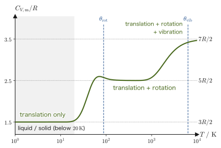

Chapter 51Applications of the Canonical Distribution — Ideal Gases, Specific Heat of Solids, and Paramagnetism
In high school physics, we learned the equation of state of an ideal gas, $pV=nRT$, and the internal energy of a monatomic gas, $U=\tfrac32nRT$, as “formulas.” As for the specific heat of solids, some readers may know that for many metals the molar specific heat takes nearly the same common value, about $25\ \mathrm{J/(mol\,K)}$ (the Dulong–Petit law). But when we are asked, “Then why is the specific heat of diamond at room temperature only $6\ \mathrm{J/(mol\,K)}$?” or “Why does the specific heat of a solid fall toward zero as the temperature is lowered?”, the thermodynamics of Part IV alone cannot answer them. To answer these questions, we must take into account that the energies of atoms and molecules can take only discrete values (quantization).
In the previous chapter, we derived the canonical distribution, according to which the probability that a system in contact with a heat bath at temperature $T$ is in a state of energy $E_j$ is proportional to the Boltzmann factor $e^{-\beta E_j}$ ($\beta\equiv1/(k_{\mathrm B}T)$), and we learned that once a single partition function $Z=\sum_jg_je^{-\beta E_j}$ has been computed, the internal energy, free energy, entropy, and pressure can all be extracted by differentiation alone. The aim of this chapter is to apply that recipe, one after another, to concrete physical systems. By the same procedure alone (“form $Z$, take the logarithm, and differentiate”), such diverse phenomena as the equation of state of an ideal gas, the specific heat of solids and its behavior at low temperatures, the hump-shaped specific heat peculiar to two-level systems, the magnetization of magnetic materials and Curie's law, and the stepwise changes in the specific heat of a diatomic-molecule gas can be understood from a single unified viewpoint.
The energy levels of the harmonic oscillator, the two-level system, and a spin in a magnetic field are borrowed, without proof, as results given by quantum mechanics (quantum mechanics itself is not treated in this book). The highlight of this chapter is that so much can be said from “energy levels and the Boltzmann factor” alone.
About the notation. $\hbar$ (“h-bar”) is the Planck constant $h$ divided by $2\pi$ ($\hbar=h/2\pi$). Since the elementary charge does not appear in this chapter, we write the exponential function as $e^{x}$ ($e$ is Napier's number). Also, following Chapter 49, we denote the number of microstates by $W$ (statistical mechanics textbooks often write $\Omega$).
- Compute the partition function of a monatomic ideal gas using the phase-space volume element $h^3$ and the factor $N!$ that removes the overcounting of identical particles, and rederive the equation of state $pV=Nk_{\mathrm B}T$, the internal energy $U=\tfrac32Nk_{\mathrm B}T$, and the entropy (the Sackur–Tetrode equation)
- Compare the partition functions of a classical harmonic oscillator (the equipartition theorem) and of a quantum harmonic oscillator with the energy levels $E_n=\hbar\omega(n+\tfrac12)$ given by quantum mechanics, and compute the specific heat $C_V(T)$ in the Einstein model, which regards a solid as $3N$ independent oscillators
- Understand the Dulong–Petit law $C_V\to3Nk_{\mathrm B}$ at high temperatures and its breakdown at low temperatures (a direct manifestation of quantum effects), and build a bridge to the Debye model (Chapter 53)
- Derive the Schottky heat capacity (a curve that approaches $0$ at both low and high temperatures and has a peak at intermediate temperatures) from the partition function of a two-level system, and understand the negative temperature that appears in systems whose energy has an upper bound
- Derive the magnetization $M=N\mu\tanh(\mu B/k_{\mathrm B}T)$ of a spin-$1/2$ paramagnet, and understand Curie's law $M\propto B/T$ as its high-temperature limit, as well as the principle of cooling by adiabatic demagnetization
- Understand qualitatively the contributions of translation, rotation, and vibration to the specific heat of a diatomic-molecule gas from the viewpoint of the “freeze-out” of quantized energy levels (the phenomenon in which, because the thermal energy $k_{\mathrm B}T$ is smaller than the level spacing, excitation does not occur and that degree of freedom no longer contributes to the specific heat)
Source notes: This chapter supplements material not in the notes. Related notes: Yasuhide Mochizuki, Physics Notes: Statistical Mechanics, p. 9 (the probability distribution of the canonical ensemble and the definition of the partition function).
51.1 The Partition Function of a Monatomic Ideal Gas
As the first application, consider an ideal gas consisting of $N$ monatomic molecules (atoms of noble gases such as helium, neon, and argon) of mass $m$ confined in a container of volume $V$. Since the molecules exert no forces on one another except in collisions (the potential energy is $0$), the energy of $1$ molecule (the Hamiltonian of Chapter 45) consists of kinetic energy alone, and in terms of the momentum $\bm p=(p_x,p_y,p_z)$ it is written as
$$ \varepsilon(\bm p)=\frac{p^2}{2m}=\frac{p_x^2+p_y^2+p_z^2}{2m} $$The molecules of the gas fly about freely inside the box, and their energy appears to take continuous values. We therefore use the way of counting learned in Section 48.2. Namely, when counting microstates in the phase space $(\bm x,\bm p)$ of classical mechanics, for $1$ molecule (a six-dimensional phase space with three position components and three momentum components) we assign a volume $h^3$ ($h$ is the Planck constant) to “one state.” By the uncertainty principle, position and momentum cannot be determined simultaneously with a precision finer than $h$, so we regard this $h^3$ as the smallest unit that distinguishes states. Then the “sum over states” in the partition function $Z=\sum_jg_je^{-\beta E_j}$ is replaced by an integral over phase space divided by $h^3$. The partition function of $1$ molecule (called the single-particle partition function and written $Z_1$) is
\begin{equation} Z_1=\frac{1}{h^3}\int_V\dd^3x\int_{-\infty}^{\infty}\dd^3p\ e^{-\beta\varepsilon(\bm p)} \label{eq:51-Z1-def} \end{equation}The position $\bm x$ can range over the inside of the container (a region of volume $V$), and the momentum $\bm p$ can take any value. Since the integrand does not depend on the position $\bm x$ (the potential is $0$), the integral over position simply gives the volume $V$. The integral over momentum becomes a product of independent one-dimensional Gaussian integrals over $p_x,p_y,p_z$.
Why do we divide by exactly $h^3$? Counting the standing waves in a box
The explanation based on the uncertainty principle gives only a rough estimate, “of order $h$.” Let us check why it is exactly $h$, using a particle confined in a one-dimensional box of length $L$. In a string fixed at both ends, only standing waves of wavelength $\lambda=2L/n$ ($n=1,2,3,\ldots$) can be set up (Section 11.7). For matter waves too, only standing waves of the same form are allowed for a particle confined in a box (the derivation is in University Mathematics, Section 45.3). From the de Broglie relation $p=h/\lambda$, the allowed magnitudes of the momentum are
$$ p_n=\frac{h}{\lambda}=\frac{nh}{2L},\qquad n=1,2,3,\ldots $$and the spacing between adjacent values is $h/(2L)$. From $n\le2LP/h$, there are $2LP/h$ states whose momentum magnitude is at most $P$. On the other hand, in the two-dimensional phase space $(x,p)$ of position and momentum, the area of the rectangle $0\le x\le L$, $-P\le p\le P$ is $L\times2P=2LP$ (a standing wave is a superposition of two traveling waves, one with $+p$ and one with $-p$, so we count both signs of $p$). Therefore
$$ \text{number of states}=\frac{2LP}{h}=\frac{\text{area of phase space}}{h} $$so exactly $1$ state corresponds to each area $h$ of phase space. Repeating the same argument in the three directions $x,y,z$, we find that in the six-dimensional phase space there is $1$ state per volume $h^3$. The viewpoint of counting the standing waves in a three-dimensional box in wavenumber space will be used once more in Section 52.8.
Derivation: The single-particle partition function $Z_1$
Using the Gaussian integral formula $\int_{-\infty}^{\infty}e^{-ax^2}\dd x=\sqrt{\pi/a}$ (University Mathematics, Section 32.1; $a\gt0$) with $a=\beta/(2m)$, the integral over $p_x$ is
$$ \int_{-\infty}^{\infty}e^{-\beta p_x^2/(2m)}\dd p_x=\sqrt{\frac{\pi}{\beta/(2m)}}=\sqrt{\frac{2\pi m}{\beta}}=\sqrt{2\pi mk_{\mathrm B}T} $$(we substituted $\beta=1/(k_{\mathrm B}T)$). The integrals over $p_y,p_z$ have the same value, so multiplying the three directions together gives
$$ \int_{-\infty}^{\infty}\dd^3p\ e^{-\beta p^2/(2m)}=\left(\sqrt{2\pi mk_{\mathrm B}T}\right)^3=\left(2\pi mk_{\mathrm B}T\right)^{3/2} $$Together with the integral over position, $\int_V\dd^3x=V$, Eq. \eqref{eq:51-Z1-def} becomes
\begin{equation} Z_1=\frac{V}{h^3}\left(2\pi mk_{\mathrm B}T\right)^{3/2}=V\left(\frac{2\pi mk_{\mathrm B}T}{h^2}\right)^{3/2} \label{eq:51-Z1} \end{equation}Let us check the dimensions. Since $[mk_{\mathrm B}T]=\mathrm{kg\cdot J}=\mathrm{kg^2\,m^2/s^2}$ and $[h^2]=\mathrm{(J\,s)^2}=\mathrm{kg^2\,m^4/s^2}$, we have $[mk_{\mathrm B}T/h^2]=\mathrm{m^{-2}}$; its $3/2$ power is $\mathrm{m^{-3}}$, and multiplying this by $[V]=\mathrm{m^3}$ makes it dimensionless. Since $Z_1$ is a quantity that counts the number of states, it must be dimensionless, and indeed it is.
∎
Definition 51.1: Thermal de Broglie wavelength
The reciprocal of the square root of the quantity in parentheses in Eq. \eqref{eq:51-Z1} (the same length that was introduced in Section 49.6.1)
\begin{equation} \lambda_{\mathrm T}\equiv\frac{h}{\sqrt{2\pi mk_{\mathrm B}T}}\quad[\mathrm m] \label{eq:51-lambdaT} \end{equation}is called the thermal de Broglie wavelength. Using it, we can write $Z_1=V/\lambda_{\mathrm T}^3$.
$\lambda_{\mathrm T}$ has already appeared in Section 49.6 as the quantity that makes the argument of the logarithm in the Sackur–Tetrode equation dimensionless (with the same defining equation). Here, without repeating the derivation, we focus only on the fact that it appears in the partition function in the form $Z_1=V/\lambda_{\mathrm T}^3$. Let us review the origin of the name. The wavelength of a matter wave (the de Broglie wavelength) is written $\lambda=h/p$ in terms of the momentum $p$. A typical magnitude of the momentum of a molecule of a gas at temperature $T$ is $p\sim\sqrt{mk_{\mathrm B}T}$ (from $\tfrac{p^2}{2m}\sim k_{\mathrm B}T$), so $\lambda\sim h/\sqrt{mk_{\mathrm B}T}$, which agrees with $\lambda_{\mathrm T}$ (apart from the factor $\sqrt{2\pi}$). $\lambda_{\mathrm T}$ is shorter the higher $T$ is (and the larger $m$ is), and is proportional to $T^{-1/2}$. $Z_1=V/\lambda_{\mathrm T}^3$ indicates “how many small cubes of side $\lambda_{\mathrm T}$ fit in the container,” that is, a measure of the number of states that a single molecule can thermally access. If $\lambda_{\mathrm T}$ is sufficiently short compared with the average spacing between molecules, $d=(V/N)^{1/3}$, the wavelike spreads of the molecules do not overlap one another, and the classical treatment that regards molecules as “points” is justified (Figure 51.1, Example 51.1).
Next, consider the partition function of $N$ molecules. Since the molecules are independent of one another (no interaction), the total energy is the sum of the energies of the individual molecules, and the Boltzmann factor is the product of the Boltzmann factors of the individual molecules. If the molecules could be distinguished one by one, the total partition function would be $Z_1^N$, that is, $Z_1$ multiplied $N$ times (the partition function of independent systems is a product; Theorem 50.2). But the molecules of a gas are identical particles that cannot be distinguished from one another, and, as we confirmed in Section 48.2, states that are carried into one another by an exchange of particles are the same state and must be counted only once. Since there are $N!$ ways to arrange $N$ particles, we divide $Z_1^N$ by $N!$:
Theorem 51.1: Partition function of a monatomic ideal gas
For an ideal gas consisting of $N$ non-interacting monatomic molecules in a volume $V$, the following expression for the partition function
\begin{equation} Z=\frac{Z_1^N}{N!}=\frac{1}{N!}\left[V\left(\frac{2\pi mk_{\mathrm B}T}{h^2}\right)^{3/2}\right]^N=\frac{1}{N!}\left(\frac{V}{\lambda_{\mathrm T}^3}\right)^N \label{eq:51-ZN} \end{equation}holds.
Why do we divide by $N!$?
Attach name tags $1,2,\ldots,N$ to the $N$ molecules and count in the manner of “the molecule with tag $1$ is in state $a$, the molecule with tag $2$ is in state $b$, …”; this produces $Z_1^N$. But molecules cannot be given name tags. “Exchanging the molecule in $a$ with the molecule in $b$ gives physically the same state.” For example, when all the molecules are in different states, the $N!$ ways of attaching the tags all represent one and the same state. Hence $Z_1^N$ counts each state $N!$ times too many, and we must divide by $N!$ (the count is slightly off when some molecules happen to be in the same state, but if the gas is dilute and $\lambda_{\mathrm T}\ll d$, such cases can be neglected). (The same convention was introduced in Section 48.2 as the way of counting phase space; here we have merely transcribed it into the form $Z=Z_1^N/N!$ of the partition function.) This $N!$ looks like a small correction, but it is indispensable for the entropy to be extensive (a quantity proportional to $N$) (the Gibbs paradox of Section 49.7).
Once the partition function has been found, the macroscopic quantities such as the pressure, internal energy, and entropy can all be extracted by the recipe of the previous chapter (Theorem 50.1). Since $N$ is very large, for $\ln N!$ we use Stirling's formula $\ln N!\approx N\ln N-N$ (Section 47.3).
Derivation: Finding $A,\ p,\ U,\ S,\ \mu$ from the partition function
Taking the logarithm of Eq. \eqref{eq:51-ZN} and using Stirling's formula, we obtain
$$ \ln Z=N\ln Z_1-\ln N!\approx N\ln Z_1-N\ln N+N=N\left[\ln\frac{Z_1}{N}+1\right]=N\left[\ln\frac{V}{N\lambda_{\mathrm T}^3}+1\right] $$Since the Helmholtz free energy is $A=-k_{\mathrm B}T\ln Z$, we have
\begin{equation} A=-Nk_{\mathrm B}T\left[\ln\frac{V}{N\lambda_{\mathrm T}^3}+1\right] \label{eq:51-A-ideal} \end{equation}Pressure. The only part of $A$ that contains $V$ is the $\ln V$ term, so $p=-(\partial A/\partial V)_T$ becomes
$$ p=-\pdiff{A}{V}=Nk_{\mathrm B}T\cdot\frac1V\qquad\therefore\quad pV=Nk_{\mathrm B}T $$and we obtain the equation of state of an ideal gas. If we let $N=nN_{\mathrm A}$ and $R=N_{\mathrm A}k_{\mathrm B}$, this is exactly $pV=nRT$, which we learned in high school.
Internal energy. We use $U=-\partial\ln Z/\partial\beta$. Written in terms of $\beta$, Eq. \eqref{eq:51-Z1} reads $Z_1=V(2\pi m/h^2)^{3/2}\beta^{-3/2}$, so $\ln Z_1=-\tfrac32\ln\beta+(\beta\text{-independent quantity})$, and since $\ln N!$ does not depend on $\beta$,
$$ U=-\pdiff{\ln Z}{\beta}=-N\pdiff{\ln Z_1}{\beta}=-N\cdot\left(-\frac{3}{2\beta}\right)=\frac32Nk_{\mathrm B}T $$Entropy. We compute $S=-(\partial A/\partial T)_V$. Since $\lambda_{\mathrm T}\propto T^{-1/2}$, we have $\ln(1/\lambda_{\mathrm T}^3)=\tfrac32\ln T+(T\text{-independent quantity})$, and differentiating Eq. \eqref{eq:51-A-ideal} with respect to $T$ by the product rule gives
$$ \pdiff{A}{T}=-Nk_{\mathrm B}\left[\ln\frac{V}{N\lambda_{\mathrm T}^3}+1\right]-Nk_{\mathrm B}T\cdot\frac{3}{2T}=-Nk_{\mathrm B}\left[\ln\frac{V}{N\lambda_{\mathrm T}^3}+\frac52\right] $$Hence $S=-\partial A/\partial T$ is given by the following equation (the right-hand side is the derivative above with its sign reversed).
\begin{equation} S=Nk_{\mathrm B}\left[\ln\frac{V}{N\lambda_{\mathrm T}^3}+\frac52\right]=Nk_{\mathrm B}\left[\ln\left\{\frac VN\left(\frac{2\pi mk_{\mathrm B}T}{h^2}\right)^{3/2}\right\}+\frac52\right] \label{eq:51-S-ideal} \end{equation}This is exactly the same as the Sackur–Tetrode equation derived from the microcanonical distribution (the volume of phase space) in Section 49.6 (the form of Formula 49.2 written in terms of the temperature $T$). We can reach the same result both from the principle of equal a priori probability and from the canonical distribution—one example of the equivalence of the two ensembles.
Chemical potential. We compute $\mu=(\partial A/\partial N)_{T,V}$. In Eq. \eqref{eq:51-A-ideal}, $N$ appears in two places, as the coefficient $N$ and as the $N$ inside the logarithm, so by the product rule
$$ \mu=\pdiff{A}{N}=-k_{\mathrm B}T\left[\ln\frac{V}{N\lambda_{\mathrm T}^3}+1\right]-Nk_{\mathrm B}T\cdot\pdiff{}{N}\ln\frac{V}{N\lambda_{\mathrm T}^3} $$For the derivative in the second term, since $\ln\dfrac{V}{N\lambda_{\mathrm T}^3}=\ln\dfrac{V}{\lambda_{\mathrm T}^3}-\ln N$, we have $\pdiff{}{N}\ln\dfrac{V}{N\lambda_{\mathrm T}^3}=-\dfrac1N$. Therefore the second term becomes $-Nk_{\mathrm B}T\cdot\left(-\dfrac1N\right)=+k_{\mathrm B}T$, which cancels the $-k_{\mathrm B}T$ produced by the $+1$ inside the bracket of the first term, so that we obtain
$$ \mu=-k_{\mathrm B}T\ln\frac{V}{N\lambda_{\mathrm T}^3} $$This is the same formula as the chemical potential found from the partial derivative of the entropy in Section 49.6, and we will use it in the next chapter (Chapter 52).
Consistency check. We verify that $A=U-TS$ holds. We have $U-TS=\tfrac32Nk_{\mathrm B}T-Nk_{\mathrm B}T\left[\ln\dfrac{V}{N\lambda_{\mathrm T}^3}+\tfrac52\right]=-Nk_{\mathrm B}T\left[\ln\dfrac{V}{N\lambda_{\mathrm T}^3}+1\right]$, which agrees with $A$ in Eq. \eqref{eq:51-A-ideal}.
∎
Theorem 51.2: Thermodynamic quantities of a monatomic ideal gas
For a monatomic ideal gas ($N$ molecules) of volume $V$ and temperature $T$, we have
$$ pV=Nk_{\mathrm B}T,\qquad U=\frac32Nk_{\mathrm B}T,\qquad S=Nk_{\mathrm B}\left[\ln\frac{V}{N\lambda_{\mathrm T}^3}+\frac52\right],\qquad \mu=-k_{\mathrm B}T\ln\frac{V}{N\lambda_{\mathrm T}^3} $$The heat capacity at constant volume is $C_V=\partial U/\partial T=\tfrac32Nk_{\mathrm B}$ (the molar heat capacity is $\tfrac32R$).
The result for the internal energy agrees with the result obtained in Section 24.3 from the kinetic theory of gases, and also with the result obtained from the equipartition theorem (Section 50.7: $\tfrac12k_{\mathrm B}T$ for each quadratic term in the kinetic energy, and three translational degrees of freedom per molecule). Even when we start from the general framework of the canonical distribution, for the ideal gas we merely reproduce the results learned so far, and no contradiction arises. What is new is the equation for the absolute value of the entropy containing $h$ (Eq. \eqref{eq:51-S-ideal}), a quantity that thermodynamics (Section 29.2) could not determine, leaving it as a constant of integration.
Example 51.1: Thermal de Broglie wavelength — the condition for classical statistical mechanics to apply
A gas of oxygen molecules $\mathrm O_2$ (mass $m=5.3\times10^{-26}\ \mathrm{kg}$) is at pressure $p=1.013\times10^5\ \mathrm{Pa}$ ($1\ \mathrm{atm}$) and temperature $T=300\ \mathrm K$. (1) Find the thermal de Broglie wavelength $\lambda_{\mathrm T}$. (2) Find the average distance between molecules, $d=(V/N)^{1/3}$, compare it with $\lambda_{\mathrm T}$, and find the number of states per molecule, $Z_1/N=(V/N)/\lambda_{\mathrm T}^3=(d/\lambda_{\mathrm T})^3$.
Solution. (1) Substitute $h=6.626\times10^{-34}\ \mathrm{J\,s}$ and $k_{\mathrm B}=1.381\times10^{-23}\ \mathrm{J/K}$ into Eq. \eqref{eq:51-lambdaT}.
The quantity under the square root is
$$ 2\pi\times5.3\times10^{-26}\ \mathrm{kg}\times1.381\times10^{-23}\ \mathrm{J/K}\times300\ \mathrm K=1.38\times10^{-45}\ \mathrm{kg\,J}=1.38\times10^{-45}\ \mathrm{kg^2\,m^2/s^2} $$and its square root is $3.71\times10^{-23}\ \mathrm{kg\,m/s}$ (the unit of momentum). Therefore
$$ \lambda_{\mathrm T}=\frac{6.626\times10^{-34}\ \mathrm{J\,s}}{3.71\times10^{-23}\ \mathrm{kg\,m/s}}\approx1.78\times10^{-11}\ \mathrm m=17.8\ \mathrm{pm} $$(2) From the equation of state $pV=Nk_{\mathrm B}T$ we have $V/N=k_{\mathrm B}T/p$, so
$$ d=\left(\frac{k_{\mathrm B}T}{p}\right)^{1/3}=\left(\frac{1.381\times10^{-23}\times300}{1.013\times10^5}\right)^{1/3}\ \mathrm m=\left(4.09\times10^{-26}\ \mathrm{m^3}\right)^{1/3}\approx3.4\times10^{-9}\ \mathrm m=3.4\ \mathrm{nm} $$(The $4.09\times10^{-26}\ \mathrm{m^3}$ inside the parentheses is the volume per molecule, $V/N$.)
Hence $\lambda_{\mathrm T}/d\approx5.2\times10^{-3}$; that is, the distance between molecules is about 190 times $\lambda_{\mathrm T}$, and $(d/\lambda_{\mathrm T})^3\approx7\times10^{6}$. There are as many as about $10^7$ available states per molecule, of which only a tiny fraction is actually occupied (almost all states are empty), so the waves of different molecules do not overlap, and the quantum-mechanical differences among identical particles (Chapter 52) have no effect. This is why a gas at room temperature and atmospheric pressure may be treated by classical statistical mechanics.
Example 51.2: Standard molar entropy of helium
Using Eq. \eqref{eq:51-S-ideal}, find the entropy per $1\ \mathrm{mol}$, $S_{\mathrm m}$, of helium ($m=4.0026\ \mathrm u=6.646\times10^{-27}\ \mathrm{kg}$; $1\ \mathrm u=1.6605\times10^{-27}\ \mathrm{kg}$) at $T=298.15\ \mathrm K$ and $p=1\times10^5\ \mathrm{Pa}$ ($1\ \mathrm{bar}$).
Solution. Let $N=N_{\mathrm A}$ and use $V/N=k_{\mathrm B}T/p$; then $S_{\mathrm m}=R\left[\ln\dfrac{k_{\mathrm B}T}{p\,\lambda_{\mathrm T}^3}+\dfrac52\right]$. First we find $\lambda_{\mathrm T}=h/\sqrt{2\pi mk_{\mathrm B}T}=5.054\times10^{-11}\ \mathrm m$ and $k_{\mathrm B}T/p=1.380649\times10^{-23}\times298.15/(1\times10^5)=4.116\times10^{-26}\ \mathrm{m^3}$.
$$ \frac{k_{\mathrm B}T}{p\,\lambda_{\mathrm T}^3}=\frac{4.116\times10^{-26}}{(5.054\times10^{-11})^3}=\frac{4.116\times10^{-26}}{1.291\times10^{-31}}\approx3.189\times10^{5} $$Since $\ln(3.189\times10^5)\approx12.673$,
$$ S_{\mathrm m}=8.3145\ \mathrm{J/(mol\,K)}\times(12.673+2.5)\approx126.15\ \mathrm{J/(mol\,K)} $$This agrees well with the value $126.15\ \mathrm{J/(mol\,K)}$ in standard thermodynamic tables. With the same equation, neon ($m=20.180\ \mathrm u$) gives $146.33\ \mathrm{J/(mol\,K)}$ and argon ($m=39.948\ \mathrm u$, Example 49.8) gives $154.85\ \mathrm{J/(mol\,K)}$, in agreement with the tabulated values ($146.33$ and $154.84\ \mathrm{J/(mol\,K)}$). For argon, it is also known that the result agrees well, within experimental error, with the entropy determined by integrating heat capacity measurements from very low temperatures (the third law in Chapter 32, Section 32.2). A theoretical formula containing the Planck constant $h$ even predicts the entropy measured with a calorimeter.
Example 51.3: Meaning of the integrand of $Z_1$ — momentum spread and the thermal de Broglie wavelength
Normalizing the integrand of Eq. \eqref{eq:51-Z1-def} gives the probability density of the momentum of a single molecule. (1) Find its form, and find the standard deviation $\sigma_p=\sqrt{\langle p_x^2\rangle}$ of one component $p_x$ of the momentum. (2) Find $\sigma_p$ numerically for oxygen molecules ($m=5.3\times10^{-26}\ \mathrm{kg}$) at $T=300\ \mathrm K$, and verify that the ratio of $h/\sigma_p$ to $\lambda_{\mathrm T}$ is $\sqrt{2\pi}$.
Solution. (1) The probability that a molecule lies within $\dd^3p$ near the momentum $\bm p$ is the Boltzmann factor divided by the momentum part of $Z_1$ (the value of the momentum integral itself):
$$ P(\bm p)\dd^3p=\frac{e^{-p^2/(2mk_{\mathrm B}T)}}{(2\pi mk_{\mathrm B}T)^{3/2}}\dd^3p $$If we rewrite this in terms of the velocity with $\bm p=m\bm v$, it becomes the Maxwell velocity distribution, the equation derived in Section 50.4; the calculations of the average speed and so on are the same as in Example 50.10, so we do not repeat them here. Since $P(\bm p)$ is a product of Gaussian distributions of the same form in $p_x,p_y,p_z$, the distribution of $p_x$ alone is $e^{-p_x^2/(2mk_{\mathrm B}T)}/\sqrt{2\pi mk_{\mathrm B}T}$. Comparing this with the Gaussian distribution $e^{-p_x^2/(2\sigma_p^2)}/\sqrt{2\pi\sigma_p^2}$, we find
$$ \sigma_p^2=\langle p_x^2\rangle=mk_{\mathrm B}T\qquad\therefore\ \sigma_p=\sqrt{mk_{\mathrm B}T} $$(this has the same content as the law of equipartition of energy: $\langle p_x^2/2m\rangle=\tfrac12k_{\mathrm B}T$, that is, $\tfrac12k_{\mathrm B}T$ per component of the kinetic energy).
(2) We have $\sigma_p=\sqrt{5.3\times10^{-26}\ \mathrm{kg}\times1.381\times10^{-23}\ \mathrm{J/K}\times300\ \mathrm K}=\sqrt{2.196\times10^{-46}}\ \mathrm{kg\,m/s}\approx1.48\times10^{-23}\ \mathrm{kg\,m/s}$. Then $h/\sigma_p=6.626\times10^{-34}/1.48\times10^{-23}\ \mathrm m\approx4.47\times10^{-11}\ \mathrm m=44.7\ \mathrm{pm}$. On the other hand, $\lambda_{\mathrm T}=17.8\ \mathrm{pm}$ was found in Example 51.1, so the ratio is $(h/\sigma_p)/\lambda_{\mathrm T}=44.7/17.8=2.51\approx\sqrt{2\pi}=2.507$. Indeed, $\lambda_{\mathrm T}=h/\sqrt{2\pi mk_{\mathrm B}T}=h/(\sqrt{2\pi}\,\sigma_p)$, and the thermal de Broglie wavelength is nothing other than the wavelength $h/\sigma_p$ determined by the momentum spread $\sigma_p$, divided by $\sqrt{2\pi}$.
Application: When $\lambda_{\mathrm T}$ approaches the intermolecular distance — quantum degeneracy
Since $\lambda_{\mathrm T}\propto T^{-1/2}$, as a gas is cooled $\lambda_{\mathrm T}$ becomes longer, and if the density is high it reaches $\lambda_{\mathrm T}\gtrsim d$. Then the classical treatment ($Z=Z_1^N/N!$) breaks down, and the behavior changes greatly depending on whether the identical particles are fermions or bosons (Chapter 52). The fact that liquid helium-4 becomes a superfluid below about $2.17\ \mathrm K$, the fact that electrons in metals (which have a small mass and a high density, so that $\lambda_{\mathrm T}\gtrsim d$ even at room temperature) do not behave like a classical gas, and the Bose–Einstein condensation realized in 1995 by cooling a dilute gas of rubidium atoms to about $170\ \mathrm{nK}$ are all manifestations of this quantum degeneracy.
51.2 The Harmonic Oscillator and the Specific Heat of the Einstein Model
The atoms in a solid vibrate about the lattice points of the crystal lattice like weights attached to springs. The specific heat of a solid is determined by how much energy these atomic vibrations can store. So we first compare how the one-dimensional harmonic oscillator (a spring pendulum, Chapter 7), the most basic model of vibration, is treated in classical mechanics and in quantum mechanics. The energy of a one-dimensional harmonic oscillator of mass $m$ and angular frequency $\omega$ can be written, as a function of the position $x$ and the momentum $p$, as
$$ \varepsilon(x,p)=\frac{p^2}{2m}+\frac12m\omega^2x^2 $$where the two terms are the kinetic energy and the elastic energy of the spring.
51.2.1 The classical harmonic oscillator and the equipartition theorem
In classical mechanics, the energy of an oscillator can take continuous values. The phase space $(x,p)$ is two-dimensional (one degree of freedom), so the unit for counting states is $h^1=h$. The partition function is found by the same procedure as for the ideal gas (carrying out the phase-space integral as a Gaussian integral).
Derivation: The partition function of the classical harmonic oscillator
$$ Z_{\mathrm{cl}}=\frac1h\int_{-\infty}^{\infty}\dd x\int_{-\infty}^{\infty}\dd p\ e^{-\beta\left[\frac{p^2}{2m}+\frac12m\omega^2x^2\right]} =\frac1h\left(\int_{-\infty}^{\infty}e^{-\beta p^2/(2m)}\dd p\right)\left(\int_{-\infty}^{\infty}e^{-\beta m\omega^2x^2/2}\dd x\right) $$The Boltzmann factor splits into a product of a function of $p$ alone and a function of $x$ alone, so the integral also splits into a product. Using the formula $\int e^{-ax^2}\dd x=\sqrt{\pi/a}$ with $a=\beta/(2m)$ for the former and $a=\beta m\omega^2/2$ for the latter, the two integrals are $\sqrt{2\pi m/\beta}$ and $\sqrt{2\pi/(\beta m\omega^2)}$, respectively. Taking the product, $m$ cancels, and
$$ Z_{\mathrm{cl}}=\frac1h\sqrt{\frac{2\pi m}{\beta}}\sqrt{\frac{2\pi}{\beta m\omega^2}}=\frac1h\cdot\frac{2\pi}{\beta\omega} $$Using $h=2\pi\hbar$ ($\hbar$ is read “h-bar” and is the Planck constant $h$ divided by $2\pi$; $\hbar\approx1.055\times10^{-34}\ \mathrm{J\,s}$), we have $2\pi/h=1/\hbar$, so we obtain
\begin{equation} Z_{\mathrm{cl}}=\frac{1}{\beta\hbar\omega}=\frac{k_{\mathrm B}T}{\hbar\omega} \label{eq:51-Zcl} \end{equation}Here $k_{\mathrm B}T$ is the thermal energy and $\hbar\omega$ is (as we shall see later) the unit of the oscillator's energy in quantum mechanics, so $Z_{\mathrm{cl}}$ is a dimensionless number expressing “how many units of energy the thermal energy amounts to.”
∎
The average energy is found from $U=-\partial\ln Z_{\mathrm{cl}}/\partial\beta$. Since $\ln Z_{\mathrm{cl}}=-\ln\beta-\ln(\hbar\omega)$, we have $\partial\ln Z_{\mathrm{cl}}/\partial\beta=-1/\beta$, and therefore
\begin{equation} U=\frac1\beta=k_{\mathrm B}T,\qquad C=\pdiff{U}{T}=k_{\mathrm B} \label{eq:51-U-cl-osc} \end{equation}This agrees with the result $U=\tfrac12k_{\mathrm B}T+\tfrac12k_{\mathrm B}T=k_{\mathrm B}T$ obtained when the equipartition theorem (Section 50.7) assigns $\tfrac12k_{\mathrm B}T$ to each of the two quadratic terms of the energy (the kinetic energy $p^2/(2m)$ and the potential energy $\tfrac12m\omega^2x^2$). What matters is that $C=k_{\mathrm B}$ is a constant independent of both the frequency $\omega$ and the temperature. Within classical mechanics, a harmonic oscillator always has the heat capacity $k_{\mathrm B}$, however low the temperature becomes. The difference from the quantum harmonic oscillator, which we see in the next subsection, is the theme of this chapter.
Example 51.4: Heat capacity of the classical harmonic oscillator
Using Eq. \eqref{eq:51-Zcl}, find the internal energy and the heat capacity of $N$ classical one-dimensional harmonic oscillators of mass $m$ and spring constant $k$. What is the molar specific heat of a solid made of $3N$ oscillators (take $N$ to be $1\ \mathrm{mol}$, that is, $N_{\mathrm A}$)?
Solution. The partition function of $N$ oscillators (distinguishable from one another and independent) is $Z_{\mathrm{cl}}^N$, so $U=-\partial\ln Z_{\mathrm{cl}}^N/\partial\beta=Nk_{\mathrm B}T$ and $C=Nk_{\mathrm B}$, which does not depend on $\omega=\sqrt{k/m}$. Since the $N_{\mathrm A}$ atoms in $1\ \mathrm{mol}$ of a solid vibrate in three directions, the solid can be regarded as $3N_{\mathrm A}$ oscillators. Therefore we obtain
$$ C_{V,\mathrm m}=3N_{\mathrm A}k_{\mathrm B}=3R=3\times8.314\ \mathrm{J/(mol\,K)}\approx24.9\ \mathrm{J/(mol\,K)} $$This value is independent of both the substance and the temperature. This “$3R$” is the Dulong–Petit law, which we see in Section 51.2.3.
51.2.2 The quantum harmonic oscillator and the Einstein model
In the previous subsection, we treated the oscillator purely classically to the end. However, the vibrations of real atoms obey quantum mechanics. This book does not treat quantum mechanics itself, but when the Schrödinger equation is solved for the harmonic potential $\tfrac12m\omega^2x^2$, one finds that the energy cannot take continuous values and that only discrete values (energy levels) are allowed. We borrow that result as a fact supplied by quantum mechanics.
Law 51.1: Energy levels of the quantum harmonic oscillator (a result of quantum mechanics)
According to quantum mechanics, the energies that a one-dimensional quantum harmonic oscillator of angular frequency $\omega$ can take are known to be quantized to the values
\begin{equation} E_n=\hbar\omega\left(n+\frac12\right),\qquad n=0,1,2,3,\ldots \label{eq:51-En} \end{equation}The spacing between adjacent levels is the same, $\hbar\omega$, for all of them (Figure 51.2). Even the lowest energy (the ground state, $n=0$) is $E_0=\tfrac12\hbar\omega\ne0$, which is called the zero-point energy. The derivation of this fact (solving the Schrödinger equation) is given in University Mathematics, Section 46.2. Here we do not go into the derivation and use only the result.
Intuition: Why are the energies of a confined system discrete?
When both ends of a string are fixed, the wavelengths of the standing waves on the string are restricted to the discrete values $2L/n$ ($n=1,2,3,\ldots$) (Section 11.7). The “boundary condition” that the displacement must be $0$ at both ends restricts the wavelength. In quantum mechanics, a particle also has the properties of a wave (a matter wave), and its wavelength is tied to its momentum by the relation $p=h/\lambda$. Therefore the wave of a particle confined in a box or in a spring potential also has its wavelength restricted by the conditions at the boundaries or walls, so that its momentum and energy take only discrete values. The energy levels $E_n$ of the harmonic oscillator are the result of this.
Using Eq. \eqref{eq:51-En}, the partition function of the quantum harmonic oscillator becomes an infinite series. Letting $x\equiv e^{-\beta\hbar\omega}$, this is precisely the infinite geometric series $\sum_{n=0}^{\infty}x^n=1/(1-x)$ with common ratio $x$ ($0\lt x\lt1$) (the formula for the sum of an infinite geometric series learned in high school; the same series was also used for Planck's oscillator in University Mathematics, Section 49.4).
Derivation: The partition function and average energy of the quantum harmonic oscillator
Since the levels are not degenerate ($g_n=1$),
$$ Z_{\mathrm{qm}}=\sum_{n=0}^{\infty}e^{-\beta\hbar\omega(n+\frac12)}=e^{-\beta\hbar\omega/2}\sum_{n=0}^{\infty}\left(e^{-\beta\hbar\omega}\right)^n=e^{-\beta\hbar\omega/2}\cdot\frac{1}{1-e^{-\beta\hbar\omega}} $$(Since $\beta,\hbar,\omega\gt0$, the common ratio $e^{-\beta\hbar\omega}$ satisfies $0\lt\cdot\lt1$, so the series converges. We also split $e^{-\beta\hbar\omega(n+1/2)}=e^{-\beta\hbar\omega/2}(e^{-\beta\hbar\omega})^n$.)
\begin{equation} Z_{\mathrm{qm}}=\frac{e^{-\beta\hbar\omega/2}}{1-e^{-\beta\hbar\omega}}=\frac{1}{2\sinh(\beta\hbar\omega/2)} \label{eq:51-Zqm} \end{equation}(The last equality follows by multiplying the numerator and denominator by $e^{\beta\hbar\omega/2}$ and using the hyperbolic sine $\sinh y=(e^y-e^{-y})/2$; see University Mathematics, Section 2.5.) We now compute the average energy $\langle E\rangle=-\partial\ln Z_{\mathrm{qm}}/\partial\beta$. Differentiating $\ln Z_{\mathrm{qm}}=-\tfrac12\beta\hbar\omega-\ln(1-e^{-\beta\hbar\omega})$ with respect to $\beta$, the rule for differentiating a composite function gives $\dd\left[-\ln(1-e^{-\beta\hbar\omega})\right]/\dd\beta=-\dfrac{\hbar\omega\,e^{-\beta\hbar\omega}}{1-e^{-\beta\hbar\omega}}$, so
$$ \pdiff{\ln Z_{\mathrm{qm}}}{\beta}=-\frac{\hbar\omega}{2}-\frac{\hbar\omega\,e^{-\beta\hbar\omega}}{1-e^{-\beta\hbar\omega}} $$Changing the sign, multiplying the numerator and denominator of the second term by $e^{\beta\hbar\omega}$, and simplifying, we obtain
\begin{equation} \langle E\rangle=\frac12\hbar\omega+\frac{\hbar\omega}{e^{\beta\hbar\omega}-1} \label{eq:51-Eavg-ho} \end{equation}∎
The second term of Eq. \eqref{eq:51-Eavg-ho}, $\hbar\omega/(e^{\beta\hbar\omega}-1)=\hbar\omega\langle n\rangle$, is the average excitation quantum number $\langle n\rangle=1/(e^{\beta\hbar\omega}-1)$ multiplied by the unit of energy $\hbar\omega$. Figure 51.3 compares the temperature dependence of this average energy with the classical result $\langle E\rangle=k_{\mathrm B}T$.
Incidentally, a factor of the form $\langle n\rangle=1/(e^{\beta\hbar\omega}-1)$ is called the Bose factor. This $1/(e^{x}-1)$ reappears in Section 52.6 as the Bose–Einstein distribution with chemical potential $\mu=0$. Also, $x^2e^x/(e^x-1)^2$, which appears in the heat capacity below, appears once more in the Debye model of Chapter 53, where, together with the formula for the Bose-type integral in Section 47.5, it is used to derive the $T^3$ law.

Why does this formula look familiar? — The correspondence with Planck's oscillator
The second term of Eq. \eqref{eq:51-Eavg-ho} has mathematically exactly the same form as the average energy $h\nu/(e^{h\nu/k_{\mathrm B}T}-1)$ of Planck's oscillator, learned in University Mathematics, Section 49.4, “Deriving the Mean Energy from the Quantum Hypothesis”, under the correspondence $\hbar\omega=h\nu$ (from $\omega=2\pi\nu$). This is no coincidence. In 1900, to explain the spectrum of black-body radiation, Planck assumed that the energy of an oscillator (a resonator) in the wall of a cavity can take only integer multiples of $h\nu$. Later it came to be understood that each mode (frequency $\nu$) of the electromagnetic waves inside the cavity can itself be regarded as a harmonic oscillator, and that its quantum (a particle of energy $h\nu$) is the photon (the particle nature of light became increasingly clear from Einstein's light-quantum hypothesis of 1905). On the other hand, a single mode of the lattice vibrations of a crystal (angular frequency $\omega$) is also a quantized harmonic oscillator, and its quantum $\hbar\omega$ is called a phonon (the quantum of lattice vibration). The same formula explains black-body radiation when applied to the quanta of light, and the specific heat of solids when applied to the vibrations of atoms. This unified view will be developed properly in Chapter 53. Incidentally, Planck's formula has no zero-point energy $\tfrac12\hbar\omega$ because it extracts only the part of $\langle E\rangle$ that changes with temperature (the zero-point energy is independent of temperature and does not contribute to the heat capacity).
Example 51.5: The high-temperature limit of the average energy of the quantum harmonic oscillator
Expand Eq. \eqref{eq:51-Eavg-ho} for $X\equiv\beta\hbar\omega=\hbar\omega/(k_{\mathrm B}T)\ll1$ (high temperature), show that $\langle E\rangle\to k_{\mathrm B}T$ (the classical result, Eq. \eqref{eq:51-U-cl-osc}), and find the first correction term. Also, for $X=1$, $\langle E\rangle$ is how many times $k_{\mathrm B}T$?
Solution. For $X\ll1$, expand $e^X=1+X+\tfrac12X^2+\tfrac16X^3+\cdots$ (the Taylor expansion in University Mathematics, Section 4.2). Then $e^X-1=X\left(1+\tfrac12X+\tfrac16X^2+\cdots\right)$, so by the geometric-series expansion $1/(1+y)\approx1-y+y^2$ we obtain
$$ \frac{1}{e^X-1}=\frac1X\left(1-\frac X2-\frac{X^2}{6}+\frac{X^2}{4}+\cdots\right)=\frac1X-\frac12+\frac{X}{12}+\cdots $$Therefore $\langle E\rangle/(\hbar\omega)=\tfrac12+\dfrac1{e^X-1}=\dfrac1X+\dfrac X{12}+\cdots$. Note that the zero-point energy $\tfrac12$ and the $-\tfrac12$ from the expansion cancel exactly. Converting back using $\hbar\omega/X=k_{\mathrm B}T$, we get
$$ \langle E\rangle=k_{\mathrm B}T\left[1+\frac{1}{12}\left(\frac{\hbar\omega}{k_{\mathrm B}T}\right)^2+\cdots\right] $$For $k_{\mathrm B}T\gg\hbar\omega$, the second term is negligible compared with $1$, so $\langle E\rangle\to k_{\mathrm B}T$, in agreement with the classical result. This is because, if the level spacing $\hbar\omega$ is small compared with the thermal energy $k_{\mathrm B}T$, the energy looks continuous, and classical and quantum theories become indistinguishable. For $X=1$, the exact formula gives $\langle E\rangle/(k_{\mathrm B}T)=\tfrac12+\dfrac1{e-1}=1.082$; that is, it is larger than the classical value by only $8\%$ (the second term of the expansion, $1/12\approx0.083$, accounts for almost exactly this difference).
A solid is a system in which $N$ atoms vibrate while being bound to one another in the crystal lattice. As the simplest model, in 1907 Einstein assumed that the $N$ atoms do not interact with one another and are all independent quantum harmonic oscillators of the same angular frequency $\omega$ (and hence the same energy-level spacing $\hbar\omega$). This is the Einstein model. Since each atom can vibrate independently in the three directions $x,y,z$ of three-dimensional space (three degrees of freedom), the whole solid can be regarded as a collection of $3N$ independent one-dimensional quantum harmonic oscillators. These oscillators can be told apart one by one by the location of the lattice point and the direction of vibration (unlike gas molecules, there is no interchange), so there is no need to divide by $N!$, and the partition function of independent systems is a product (Theorem 50.2). Therefore the partition function of the whole solid is $Z_{\mathrm{qm}}^{3N}$, the $3N$th power of $Z_{\mathrm{qm}}$ in Eq. \eqref{eq:51-Zqm}, and the internal energy is $3N$ times Eq. \eqref{eq:51-Eavg-ho}. (This problem of counting the microstates of the solid was treated from the standpoint of the microcanonical distribution in Section 48.5. Here, with the canonical distribution, we can treat the same physics far more easily.)
Formula 51.1: Internal energy of the Einstein model
The internal energy of a solid made of $3N$ independent quantum harmonic oscillators (angular frequency $\omega$) is given by
\begin{equation} U(T)=3N\langle E\rangle=\frac32N\hbar\omega+\frac{3N\hbar\omega}{e^{\hbar\omega/(k_{\mathrm B}T)}-1} \label{eq:51-U-einstein} \end{equation}The first term $\tfrac32N\hbar\omega$ is the sum of the zero-point energies, which is independent of temperature.
Definition 51.2: Einstein temperature
The quantity obtained by expressing the angular frequency $\omega$ as a quantity with the dimension of temperature,
$$ \theta_{\mathrm E}\equiv\frac{\hbar\omega}{k_{\mathrm B}}\quad[\mathrm K] $$is called the Einstein temperature. In what follows we use $x\equiv\theta_{\mathrm E}/T=\hbar\omega/(k_{\mathrm B}T)$.
Derivation: Heat capacity $C_V$ of the Einstein model
The heat capacity at constant volume is $C_V=\partial U/\partial T$, using $U$ from Formula 51.1 (Eq. \eqref{eq:51-U-einstein}). Since the zero-point energy term does not depend on $T$, we need to differentiate only the second term. Using $\hbar\omega=k_{\mathrm B}\theta_{\mathrm E}$, the second term is $3Nk_{\mathrm B}\theta_{\mathrm E}/(e^{\theta_{\mathrm E}/T}-1)$. Using the derivative of the composite function, $\dd\left(e^{\theta_{\mathrm E}/T}\right)/\dd T=-\dfrac{\theta_{\mathrm E}}{T^2}e^{\theta_{\mathrm E}/T}$, we have
$$ C_V=3Nk_{\mathrm B}\theta_{\mathrm E}\cdot\left(-\frac{1}{\left(e^{\theta_{\mathrm E}/T}-1\right)^2}\right)\cdot\left(-\frac{\theta_{\mathrm E}}{T^2}e^{\theta_{\mathrm E}/T}\right) $$The two negative signs cancel, and after simplification we obtain
\begin{equation} C_V=3Nk_{\mathrm B}\left(\frac{\theta_{\mathrm E}}{T}\right)^2\frac{e^{\theta_{\mathrm E}/T}}{\left(e^{\theta_{\mathrm E}/T}-1\right)^2}=3Nk_{\mathrm B}\,x^2\frac{e^x}{(e^x-1)^2} \label{eq:51-Cv-einstein} \end{equation}(The graph is shown in Figure 51.4.) This expression has the form of the function $f_{\mathrm E}(x)\equiv x^2e^x/(e^x-1)^2$ of $x=\theta_{\mathrm E}/T$ alone, multiplied by $3Nk_{\mathrm B}$, so differences between substances enter only through $\theta_{\mathrm E}$ (the specific heat curve, measured against $T/\theta_{\mathrm E}$, has the same shape for every substance).
∎
Example 51.6: The frequency corresponding to the Einstein temperature, and the specific heat at room temperature and at low temperature
Regard a certain metal as an Einstein solid with Einstein temperature $\theta_{\mathrm E}=240\ \mathrm K$ (a representative value that approximates the lattice specific heat of copper well, about $0.7$ times the Debye temperature $\theta_{\mathrm D}=343\ \mathrm K$; the numbers are for illustration). (1) Find the frequency $\nu=\omega/(2\pi)$ and the energy $\hbar\omega$ (in $\mathrm{meV}$) corresponding to this $\theta_{\mathrm E}$. (2) Using Eq. \eqref{eq:51-Cv-einstein}, find $C_V/(3Nk_{\mathrm B})$ and the molar specific heat at room temperature $T=300\ \mathrm K$ and at $T=50\ \mathrm K$.
Solution. (1) $\hbar\omega=k_{\mathrm B}\theta_{\mathrm E}=1.381\times10^{-23}\times240=3.31\times10^{-21}\ \mathrm J=20.7\ \mathrm{meV}$ (we used $1\ \mathrm{eV}=1.602\times10^{-19}\ \mathrm J$). The frequency is $\nu=k_{\mathrm B}\theta_{\mathrm E}/h=3.31\times10^{-21}/6.626\times10^{-34}\approx5.0\times10^{12}\ \mathrm{Hz}=5.0\ \mathrm{THz}$, which corresponds to far-infrared radiation with wavelength $c/\nu\approx60\ \mu\mathrm m$. That the typical frequencies of atomic vibrations in crystals lie in the terahertz range has been confirmed by experiments (infrared absorption, Raman scattering, and neutron scattering).
(2) At $T=300\ \mathrm K$ we have $x=240/300=0.800$, so
$$ \frac{C_V}{3Nk_{\mathrm B}}=x^2\frac{e^x}{(e^x-1)^2}=0.800^2\times\frac{e^{0.800}}{(e^{0.800}-1)^2}=0.64\times\frac{2.2255}{(1.2255)^2}\approx0.948 $$The molar specific heat is $0.948\times3R=0.948\times24.94\approx23.7\ \mathrm{J/(mol\,K)}$. At room temperature it reaches about $95\%$ of the Dulong–Petit value ($3R$). At $T=50\ \mathrm K$ we have $x=240/50=4.80$, so
$$ \frac{C_V}{3Nk_{\mathrm B}}=4.80^2\times\frac{e^{4.80}}{(e^{4.80}-1)^2}=23.04\times\frac{121.51}{(120.51)^2}\approx0.193 $$Thus the molar specific heat is a mere $C_{V,\mathrm m}\approx4.8\ \mathrm{J/(mol\,K)}$. Even for the same substance with the same number of atoms, cooling it to $50\ \mathrm K$ drops the specific heat to about $19\%$ of $3R$. This is a direct manifestation of a quantum effect, one that the classical equipartition theorem can never explain.
Application: Specific-heat measurements reveal the strength of the bonds between atoms
If we measure the specific heat of a solid precisely as a function of temperature, we can read off with what “stiffness” the atoms of that substance vibrate. The higher the Einstein temperature $\theta_{\mathrm E}=\hbar\omega/k_{\mathrm B}$, the more strongly the atoms are bound and the faster they vibrate. For a bond with spring constant $k$ and an atom of mass $m$, $\omega=\sqrt{k/m}$, so $\theta_{\mathrm E}$ is higher for substances in which light atoms are joined by strong covalent bonds (such as diamond) and lower for substances in which heavy atoms are joined by soft metallic bonds (such as lead). That information about microscopic interatomic bonds can be extracted from macroscopic thermal measurements shows the practical power of statistical mechanics.
51.2.3 The Dulong–Petit law and its breakdown at low temperatures
Let us examine $C_V=3Nk_{\mathrm B}\,f_{\mathrm E}(x)$ ($x=\theta_{\mathrm E}/T$) of Eq. \eqref{eq:51-Cv-einstein} in the high-temperature limit ($x\to0$, $T\gg\theta_{\mathrm E}$) and in the low-temperature limit ($x\to\infty$, $T\ll\theta_{\mathrm E}$). As preparation, we rewrite the denominator in a symmetric form. Dividing the numerator and the denominator by $e^x$ gives $f_{\mathrm E}(x)=x^2\dfrac{1}{(e^{x/2}-e^{-x/2})^2}$, and using $\sinh y=(e^y-e^{-y})/2$ we can write it
\begin{equation} f_{\mathrm E}(x)=\frac{x^2}{4\sinh^2(x/2)}=\left[\frac{x/2}{\sinh(x/2)}\right]^2 \label{eq:51-fE-sinh} \end{equation}in this symmetric form.
Derivation: High- and low-temperature limits of the Einstein model
High-temperature limit ($x\ll1$). Since $\sinh y=y+\tfrac16y^3+\cdots=y\left(1+\tfrac16y^2+\cdots\right)$ (Taylor expansion), setting $y=x/2$ in Eq. \eqref{eq:51-fE-sinh} gives
$$ \frac{x/2}{\sinh(x/2)}=\frac{1}{1+\frac{1}{6}\left(\frac x2\right)^2+\cdots}\approx1-\frac{x^2}{24},\qquad f_{\mathrm E}(x)\approx\left(1-\frac{x^2}{24}\right)^2\approx1-\frac{x^2}{12} $$As $x\to0$, $f_{\mathrm E}\to1$ and hence $C_V\to3Nk_{\mathrm B}$. This agrees with the classical result of Section 51.2.1 (three directions per atom, with each directional oscillator contributing $k_{\mathrm B}$). The correction term $-x^2/12$ becomes smaller the higher $T$ is; even at $T=\theta_{\mathrm E}$ ($x=1$) we have $f_{\mathrm E}(1)=0.921$, that is, a decrease of only about $8\%$.
Low-temperature limit ($x\gg1$). Since $e^x\gg1$, we can approximate $e^x-1\approx e^x$, and therefore
$$ f_{\mathrm E}(x)=x^2\frac{e^x}{(e^x-1)^2}\approx x^2\frac{e^x}{e^{2x}}=x^2e^{-x}\ \xrightarrow[x\to\infty]{}\ 0 $$The exponential function $e^{-x}=e^{-\theta_{\mathrm E}/T}$ approaches $0$ much faster than the polynomial $x^2$ grows, so the specific heat drops to $0$ at an exponential rate as absolute zero is approached. In this way, when the thermal energy $k_{\mathrm B}T$ is smaller than the level spacing $\hbar\omega$, so that no excitation occurs and the degree of freedom no longer contributes to the specific heat, we say that the degree of freedom undergoes freeze-out.
∎
Law 51.2: Dulong–Petit law (1819)
For many solid elements, the molar specific heat near room temperature takes a common, nearly constant value, $3R\approx24.9\ \mathrm{J/(mol\,K)}$. This is called the Dulong–Petit law. The high-temperature limit of the Einstein model, $C_V\to3Nk_{\mathrm B}=3R$ ($N=N_{\mathrm A}$), reproduces this empirical rule theoretically.
This empirical rule, found by P. L. Dulong and A. T. Petit in 1819, was discovered at a time when neither the internal mechanics of the atom nor quantum mechanics was known, and it was also used then as a clue for determining atomic weights. Einstein's quantum-theoretical model was the first to account, within a single framework, both for the fact that this rule can be explained by the equipartition theorem of classical statistical mechanics (the high-temperature limit) and for the existence of a temperature region in which the equipartition theorem fails (low temperatures). Table 51.1 shows the molar specific heats of representative elements at room temperature.
| Substance | $C_p\ [\mathrm{J/(mol\,K)}]$ | $C_p/(3R)$ | $\theta_{\mathrm D}\ [\mathrm K]$ |
|---|---|---|---|
| Lead $\mathrm{Pb}$ | 26.4 | 1.06 | 105 |
| Gold $\mathrm{Au}$ | 25.4 | 1.02 | 165 |
| Iron $\mathrm{Fe}$ | 25.1 | 1.01 | 470 |
| Copper $\mathrm{Cu}$ | 24.4 | 0.98 | 343 |
| Aluminum $\mathrm{Al}$ | 24.2 | 0.97 | 428 |
| Silicon $\mathrm{Si}$ | 19.8 | 0.79 | 645 |
| Diamond $\mathrm C$ | 6.1 | 0.24 | 2230 |
For lead, gold, iron, copper, and aluminum, $C_p/(3R)$ is almost $1$, whereas silicon and diamond have values much smaller than $3R$. This difference can be understood as follows: in diamond (where light carbon atoms are joined by strong covalent bonds), $\theta_{\mathrm E}$ ($\theta_{\mathrm D}$) is far higher than room temperature, so room temperature already lies in the “low-temperature” region. Note that the values in the table are for the heat capacity at constant pressure, $C_p$, which is easy to measure experimentally; for solids its difference from the heat capacity at constant volume, $C_V$, is small (a few percent or less), so it can be used as it is for the comparison in this chapter.
$\theta_{\mathrm E}$ and $\theta_{\mathrm D}$ are defined differently ($\theta_{\mathrm D}$ is determined by the Debye model, in which the frequencies are continuously distributed), so they take different values even for the same substance. Matching the high-temperature correction terms gives $\theta_{\mathrm E}=\sqrt{3/5}\,\theta_{\mathrm D}\approx0.775\,\theta_{\mathrm D}$ (Section 53.9). The diamond ($1300/2230\approx0.58$) and the copper ($240/343\approx0.70$) of this chapter's examples also lie in this range.

Related simulator: Phonons and Specific Heat (Comparing Dulong–Petit, Einstein, and Debye)
This curve explains the specific heat of diamond (Example 51.8). In fact, in his 1907 paper Einstein proposed his model of quantized oscillators precisely to explain the decrease at low temperatures in the specific heat of diamond and other substances (as measured by H. F. Weber). It was the first example showing that Planck's quantum hypothesis can be applied not only to light but also to the mechanical vibrations of matter. Furthermore, in the early 1910s Nernst and his collaborators systematically measured the specific heats of many solids at low temperatures, down to the temperature range of liquid air and liquid hydrogen, and confirmed that the specific heat indeed drops toward $0$ at low temperatures.
Example 51.7: How fast the specific heat falls at low temperatures
For a solid with Einstein temperature $\theta_{\mathrm E}=240\ \mathrm K$, calculate $C_V/(3Nk_{\mathrm B})$ at $T=\theta_{\mathrm E}/10=24\ \mathrm K$, both from the exact value given by Eq. \eqref{eq:51-Cv-einstein} and from the low-temperature approximation $x^2e^{-x}$, and compare the two.
Solution. Since $x=10$, the exact value is $x^2e^x/(e^x-1)^2=100\times e^{10}/(e^{10}-1)^2$. From $e^{10}=22026.47$ we get $(e^{10}-1)^2=(22025.47)^2=4.8512\times10^{8}$, and therefore $100\times22026.47/(4.8512\times10^8)\approx4.5404\times10^{-3}$. The approximation is $x^2e^{-x}=100\times e^{-10}=4.5400\times10^{-3}$, with a relative error of only about $0.01\%$ (the exact expression is $x^2e^{-x}(1-e^{-x})^{-2}\approx x^2e^{-x}(1+2e^{-x})$, so the correction is $2e^{-10}\approx9\times10^{-5}$). In terms of the molar specific heat this is $3R\times4.54\times10^{-3}\approx0.11\ \mathrm{J/(mol\,K)}$, which has fallen to $0.5\%$ of the room-temperature value ($3R\approx24.9$). Merely reducing the temperature to $1/12.5$ of its value, from $300\ \mathrm K$ to $24\ \mathrm K$, reduces the specific heat to about $1/200$ of its value. This is not a polynomial decrease such as $C\propto T^n$; it is the hallmark of the exponential decrease due to $e^{-\theta_{\mathrm E}/T}$.
Example 51.8: The specific heat of diamond at room temperature
Examine whether the measured specific heat of diamond (about $6.1\ \mathrm{J/(mol\,K)}$ at $25\ ^\circ\mathrm C$) can be explained by the Einstein model with $\theta_{\mathrm E}\approx1300\ \mathrm K$. What happens at $T=1000\ \mathrm K$?
Solution. At $T=298.15\ \mathrm K$ we have $x=1300/298.15=4.36$, so
$$ \frac{C_V}{3Nk_{\mathrm B}}=x^2\frac{e^x}{(e^x-1)^2}=4.36^2\times\frac{e^{4.36}}{(e^{4.36}-1)^2}\approx0.249 $$and the molar specific heat is $0.249\times24.94\approx6.2\ \mathrm{J/(mol\,K)}$, which nearly agrees with the measured value of $6.1\ \mathrm{J/(mol\,K)}$. The specific heat of diamond is only $1/4$ of $3R$, unlike that of the metal with $\theta_{\mathrm E}=240\ \mathrm K$ (about $95\%$ at room temperature in Example 51.6), because $\theta_{\mathrm E}$ is more than four times room temperature, so room temperature already lies in the low-temperature region. At $T=1000\ \mathrm K$ we have $x=1.30$, $C_V/(3Nk_{\mathrm B})\approx0.870$, and $C_{V,\mathrm m}\approx21.7\ \mathrm{J/(mol\,K)}$, so we see the recovery of the Dulong–Petit law, according to which the specific heat approaches $3R$ at high temperatures. (The value $\theta_{\mathrm E}=1300\ \mathrm K$ used here was chosen to fit the measurements.)
Application: The limits of the Einstein model and a bridge to the Debye model
The Einstein model explains the Dulong–Petit law and its breakdown at low temperatures remarkably well in qualitative terms. However, compared with precise low-temperature measurements, it is quantitatively inadequate. According to experiments, the specific heat of an insulator at very low temperatures approaches $0$ much more gently than the exponential decrease $e^{-\theta_{\mathrm E}/T}$ predicted by the Einstein model, namely in proportion to the cube of the temperature, $C_V\propto T^3$ (for example, the lattice specific heat of copper at $T=10\ \mathrm K$ is about $2\times10^{-8}$ times $3Nk_{\mathrm B}$ in the Einstein model with $\theta_{\mathrm E}=240\ \mathrm K$, but about $2\times10^{-3}$ times (that is, $0.048\ \mathrm{J/(mol\,K)}$) in Debye's $T^3$ law ($\theta_{\mathrm D}=343\ \mathrm K$, the Debye temperature obtained from measurements of the low-temperature specific heat of copper), which agrees well with the measured lattice specific heat. The two differ by five orders of magnitude (Figure 51.5, Exercise 51.5). The $T^3$ law agrees well with experiment at very low temperatures $T\lesssim\theta_{\mathrm D}/50$ (about $7\ \mathrm K$ for copper); $10\ \mathrm K$ lies slightly outside that range, but it suffices for seeing the difference in orders of magnitude). The cause is the assumption that “all atoms vibrate independently with the same frequency $\omega$.” In a real solid, the atoms vibrate in concert with one another within the lattice, and there are vibrational modes continuously distributed from very slow vibrations with frequencies close to $0$ (sound waves) up to high frequencies. A mode of lower frequency can be excited by a smaller quantum $\hbar\omega$, so no matter how low the temperature, some modes do not “freeze out” and continue to contribute to the specific heat. The model that takes this distribution of frequencies into account (the Debye model) is treated in Chapter 53. In metals, the specific heat of the conduction electrons (which is proportional to the temperature) is added at very low temperatures (Chapter 52).

51.3 Two-Level Systems, Schottky Heat Capacity, and Negative Temperature
51.3.1 Partition function and Schottky heat capacity of two-level systems
From here on we consider a system with only two energy levels—a two-level system having just a lower level (energy $0$) and an upper level (energy $\varepsilon\gt0$). Despite its apparent simplicity, the range of applications of the two-level system is surprisingly wide. The two energy states of an electron around an impurity atom in a crystal, the two configurations a point defect can take, the two orientations of a nuclear spin, and a spin-$1/2$ particle in a magnetic field, which we treat in the next section: many real systems fit into this framework under suitable approximations. The two-level system is also an ideal subject for reviewing the tools of the previous chapter (the partition function, average energy, free energy, and heat capacity). In the previous chapter we examined the partition function, average energy, free energy, and entropy of a single two-level system in Example 50.5, three independent systems in Example 50.7, and the heat capacity and energy fluctuation in Example 50.11. Here we extend these results to $N$ systems and focus on the form of the temperature dependence of the heat capacity (the Schottky heat capacity), its high- and low-temperature limits, and the position of the peak.
We suppose that the $N$ two-level systems are fixed at lattice sites or impurity positions and can be distinguished from one another (there is no interchange as there is for gas molecules). Each system is independent, and the partition function per system is $z=e^{-\beta\cdot0}+e^{-\beta\varepsilon}=1+e^{-\beta\varepsilon}$. The partition function of independent systems is the product of the individual ones (Theorem 50.2), so
Theorem 51.3: Partition function of $N$ independent two-level systems
\begin{equation} Z=z^N=\left(1+e^{-\beta\varepsilon}\right)^N \label{eq:51-Z2level} \end{equation}Derivation: Average energy and heat capacity of two-level systems
From Eq. \eqref{eq:51-Z2level} we have $\ln Z=N\ln(1+e^{-\beta\varepsilon})$. Differentiating this with respect to $\beta$ and using the rule for differentiating a composite function, we obtain
$$ U=-\pdiff{\ln Z}{\beta}=-N\cdot\frac{-\varepsilon e^{-\beta\varepsilon}}{1+e^{-\beta\varepsilon}}=N\varepsilon\frac{e^{-\beta\varepsilon}}{1+e^{-\beta\varepsilon}} $$Multiplying the numerator and denominator by $e^{\beta\varepsilon}$ gives
\begin{equation} U=\frac{N\varepsilon}{e^{\beta\varepsilon}+1}=N\varepsilon P_1 \label{eq:51-U2level} \end{equation}Here $P_1=1/(e^{\beta\varepsilon}+1)$ is the occupation probability of the upper level, and the expression has the intuitive meaning “of the $N$ systems, $NP_1$ are in the upper level, and each one has energy $\varepsilon$.” For the heat capacity, letting $x\equiv\varepsilon/(k_{\mathrm B}T)$ gives $U=N\varepsilon(e^x+1)^{-1}$, and since $\dd x/\dd T=-x/T$, the chain rule gives
$$ C_V=\pdiff{U}{T}=\dd U/\dd x\cdot\dd x/\dd T=\left(-\frac{N\varepsilon e^x}{(e^x+1)^2}\right)\left(-\frac xT\right)=N\frac{\varepsilon}{T}\,x\frac{e^x}{(e^x+1)^2} $$Using $\varepsilon/T=k_{\mathrm B}x$ here, we obtain
\begin{equation} C_V=Nk_{\mathrm B}\left(\frac{\varepsilon}{k_{\mathrm B}T}\right)^2\frac{e^{\varepsilon/(k_{\mathrm B}T)}}{\left(e^{\varepsilon/(k_{\mathrm B}T)}+1\right)^2}=Nk_{\mathrm B}\,x^2\frac{e^x}{(e^x+1)^2} \label{eq:51-Cv-schottky} \end{equation}This is very similar in form to Eq. \eqref{eq:51-Cv-einstein} of the Einstein model; the only difference is whether the denominator is $(e^x-1)^2$ or $(e^x+1)^2$. This difference changes the shape of the curve greatly (as we see next).
∎
Plotting the occupation probability $P_1$ of the upper level and the occupation probability $P_0=1-P_1$ of the lower level as functions of $k_{\mathrm B}T/\varepsilon$ gives Figure 51.6. At low temperatures $P_0\to1$ and $P_1\to0$, and as the temperature rises $P_1$ increases; but even when $k_{\mathrm B}T\gg\varepsilon$, $P_0,P_1\to\tfrac12$ and stop there, so $P_1$ never exceeds $\tfrac12$. Since $U=N\varepsilon P_1$, the internal energy has the upper bound $\tfrac12N\varepsilon$.

Definition 51.3: Schottky heat capacity
The temperature dependence of the heat capacity of a two-level system, Eq. \eqref{eq:51-Cv-schottky}, is called the Schottky heat capacity, or the Schottky anomaly (named after the German physicist W. Schottky). The graph is shown in Figure 51.7.

Derivation: High- and low-temperature limits of the Schottky heat capacity
As we did for the Einstein model, rewriting $e^x/(e^x+1)^2=1/(e^{x/2}+e^{-x/2})^2=1/(4\cosh^2(x/2))$ (with $\cosh y=(e^y+e^{-y})/2$), we obtain
\begin{equation} \frac{C_V}{Nk_{\mathrm B}}=\frac{x^2}{4\cosh^2(x/2)} \label{eq:51-fS-cosh} \end{equation}High temperature ($x\ll1$). Since $\cosh(x/2)\to1$, $C_V\approx Nk_{\mathrm B}\,x^2/4=Nk_{\mathrm B}\left(\dfrac{\varepsilon}{2k_{\mathrm B}T}\right)^2\propto T^{-2}$, which approaches $0$.
Low temperature ($x\gg1$). From $(e^x+1)^2\approx e^{2x}$ we get $C_V\approx Nk_{\mathrm B}\,x^2e^{-x}$, which approaches $0$ exponentially (the same form as the low-temperature limit of the Einstein model).
∎
Why does $C_V\to0$ at both high and low temperatures?
The reason that $C_V\to0$ at low temperatures ($k_{\mathrm B}T\ll\varepsilon$) is the same as for the low-temperature limit of the Einstein model. Because the thermal energy $k_{\mathrm B}T$ is much smaller than the level spacing $\varepsilon$, the system almost certainly stays in the ground state, and even if the temperature is raised slightly, almost no excitation to the upper level occurs. The energy hardly responds to temperature ($\dd U/\dd T\approx0$).
At high temperatures ($k_{\mathrm B}T\gg\varepsilon$), on the other hand, the reason that $C_V\to0$ is different from that for the Einstein model (which has the constant value $3Nk_{\mathrm B}$ at high temperatures). A two-level system has only two levels, so as $T\to\infty$ both levels are already occupied with almost equal probability ($P_0\approx P_1\approx\tfrac12$, Figure 51.6), and raising the temperature further hardly changes the occupation ratio. The internal energy has the upper bound $\tfrac12N\varepsilon$ and cannot absorb any more heat, so $\dd U/\dd T\to0$. A harmonic oscillator has an infinite ladder of levels, so raising the temperature lets it climb to arbitrarily high levels, and its heat capacity remains at a constant value. In contrast, for a system whose levels have an upper bound, the heat capacity starts to decrease at high temperatures. At intermediate temperatures ($k_{\mathrm B}T\sim\varepsilon$), the thermal energy is just comparable to the level spacing, and each small rise in temperature increases the number of excited systems the most, so the heat capacity is maximal.
Example 51.9: Occupation probability of a two-level system
A two-level system with level spacing $\varepsilon=1.0\times10^{-21}\ \mathrm J$ is at $T=300\ \mathrm K$. Find the probability $P_1=e^{-\beta\varepsilon}/(1+e^{-\beta\varepsilon})$ that the upper level (the excited level) is occupied.
Solution. Since $k_{\mathrm B}T=1.381\times10^{-23}\times300=4.143\times10^{-21}\ \mathrm J$, we have $x=\varepsilon/(k_{\mathrm B}T)=1.0\times10^{-21}/(4.143\times10^{-21})\approx0.2414$. Multiplying the numerator and denominator by $e^{x}$,
$$ P_1=\frac{e^{-x}}{1+e^{-x}}=\frac{1}{e^{x}+1}=\frac{1}{e^{0.2414}+1}=\frac{1}{1.2731+1}\approx0.440 $$Since $\varepsilon$ is much smaller than the thermal energy $k_{\mathrm B}T$, the upper and lower levels are occupied with almost equal probability ($P_0=1-P_1\approx0.560$, $P_1\approx0.440$). The value $\varepsilon=1.0\times10^{-21}\ \mathrm J$ is about $6.2\ \mathrm{meV}$, which corresponds in temperature to $\varepsilon/k_{\mathrm B}\approx72\ \mathrm K$, so even at room temperature about 40% of the systems are excited.
Example 51.10: Peak position of the Schottky heat capacity
Regarding Eq. \eqref{eq:51-Cv-schottky} as a function $f_{\mathrm S}(x)=x^2e^x/(e^x+1)^2$ of $x=\varepsilon/(k_{\mathrm B}T)$, derive the equation that determines the value of $x$ at which $C_V$ is maximal, and solve it numerically. Also find the maximum value.
Solution. By Eq. \eqref{eq:51-fS-cosh}, $f_{\mathrm S}=\left[\dfrac{x/2}{\cosh(x/2)}\right]^2$, so it suffices to find the $y$ that maximizes $g(y)=y/\cosh y$ ($y=x/2$). From $g'(y)=\dfrac{\cosh y-y\sinh y}{\cosh^2y}=0$ we get $\cosh y=y\sinh y$, that is, $y\tanh y=1$, and written in terms of $x=2y$,
$$ x\tanh\frac x2=2 $$This is a transcendental equation that cannot be solved analytically for $x$, so we solve it numerically by the bisection method (a method that repeatedly halves the interval containing the solution). Letting $f(x)\equiv x\tanh(x/2)-2$, we have
| $x$ | $2$ | $2.5$ | $2.4$ | $2.39$ |
|---|---|---|---|---|
| $f(x)$ | $-0.477$ | $+0.121$ | $+0.0008$ | $-0.011$ |
Since $f(2)\lt0\lt f(2.5)$, the solution lies in $2\lt x\lt2.5$, and since $f(2.4)\gt0\gt f(2.39)$ it is narrowed down to $2.39\lt x\lt2.4$. Continuing this procedure gives $x=2.3994$ (we can verify from $\tanh1.1997=0.8336$ that $2.3994\times0.8336=2.000$). Thus the peak lies at $k_{\mathrm B}T=\varepsilon/2.3994\approx0.417\,\varepsilon$, and the maximum value is $f_{\mathrm S}(2.3994)=0.4392$, that is, $C_V^{\max}\approx0.439\,Nk_{\mathrm B}$. That the peak appears at $x=2.4$, that is, at a value of order $1$ ($k_{\mathrm B}T\sim\varepsilon$), is consistent with the qualitative explanation in the “Why?” box (excitation is most active when the thermal energy is comparable to the level spacing).
Example 51.11: Reading the level spacing from the peak of the Schottky heat capacity
Suppose that impurity ions contained in a crystal have two levels with energy spacing $\varepsilon=k_{\mathrm B}\times5.0\ \mathrm K$. Find the temperature at which the Schottky heat capacity per $1\ \mathrm{mol}$ peaks, and the height of the peak (in $\mathrm{J/(mol\,K)}$). Conversely, if the peak is observed at $T=2.0\ \mathrm K$, what is the level spacing converted to a temperature?
Solution. Since the peak is at $k_{\mathrm B}T_{\mathrm{peak}}=0.417\,\varepsilon$, we have $T_{\mathrm{peak}}=0.417\times5.0\ \mathrm K\approx2.08\ \mathrm K$. The height is $0.439\,R=0.439\times8.314\approx3.65\ \mathrm{J/(mol\,K)}$ (for $1\ \mathrm{mol}$ of impurities; if the fraction of impurities is $c$, it is multiplied by $c$). Conversely, if $T_{\mathrm{peak}}=2.0\ \mathrm K$, then $\varepsilon/k_{\mathrm B}=T_{\mathrm{peak}}/0.417=2.0\times2.399\approx4.8\ \mathrm K$. In this way, the spacing of the energy levels can be read directly from the position of the peak of the heat capacity.
Application: Peaked anomalies in the low-temperature heat capacity
In crystals containing rare-earth ions or transition-metal ions, the electronic levels of an ion are slightly split by the crystal field (the electric field created by the surrounding ions), and low-lying energy levels with spacings corresponding to a few $\mathrm{K}$ to several tens of $\mathrm K$ may arise. Nuclear spins also split into two or more levels in a magnetic field. When the thermal energy just matches such levels at low temperatures of a few $\mathrm K$, a peak of the Schottky heat capacity appears on top of the smooth heat capacity due to lattice vibrations (which increases as $T^3$). Low-temperature heat capacity measurement is a powerful means of determining, from the position and height of this peak, the level spacing and the number of systems (and the degeneracy of the levels).
51.3.2 Negative temperature
The two-level system is also a subject that makes us reconsider the very definition of temperature. In Section 49.4, by examining the most probable state when two systems are in thermal contact, we defined the temperature as the derivative of the entropy with respect to the energy, $1/T=\partial S/\partial E$ (Definition 49.2). Let us apply this definition to a two-level system. When, of $N$ independent two-level systems, $n$ are in the upper level (energy $\varepsilon$) and the remaining $N-n$ are in the lower level (energy $0$), the total energy is $E=n\varepsilon$. The number of microstates corresponding to this macrostate is the number of ways of choosing which $n$ systems are in the upper level, that is, the binomial coefficient $W(N,n)=\binom Nn=N!/[n!(N-n)!]$ of Formula 48.1 in Section 48.5. We use Boltzmann's principle $S=k_{\mathrm B}\ln W$ (Section 49.2) and Stirling's formula (Section 47.3). The derivation of this $S(E)$ and its relation to temperature were already treated in detail in Section 49.8.2. Here we only restate the result, and concentrate on the meaning of $T\lt0$ and on experiments.
Restatement of the result: $S(E)$ and $1/T$ of a two-level system
By the derivation in Section 49.8.2 (applying Stirling's formula $\ln k!\approx k\ln k-k$ to $N!,\ n!,\ (N-n)!$, and collecting terms in the excited fraction $f\equiv n/N=E/(N\varepsilon)$), we have
\begin{equation} \frac{S}{Nk_{\mathrm B}}=-f\ln f-(1-f)\ln(1-f) \label{eq:51-S-twolevel} \end{equation}This is a peaked, concave-down function that has $S=0$ at $f=0$ (all in the ground state) and at $f=1$ (all in the excited state), and takes its maximum value $S=Nk_{\mathrm B}\ln2$ at $f=\tfrac12$ (Figure 51.8). Since $E=N\varepsilon f$, we have $\partial f/\partial E=1/(N\varepsilon)$, and differentiating with respect to $E$ by the chain rule gives
\begin{equation} \frac1T=\pdiff{S}{E}=\frac{k_{\mathrm B}}{\varepsilon}\ln\frac{1-f}{f}=\frac{k_{\mathrm B}}{\varepsilon}\ln\frac{N-n}{n} \label{eq:51-negT} \end{equation}Incidentally, this equation can also be checked from the partition function. Substituting Eq. \eqref{eq:51-negT} back into $n/N=P_1=1/(e^{\varepsilon/k_{\mathrm B}T}+1)$ (Eq. \eqref{eq:51-U2level}) gives $(N-n)/n=e^{\varepsilon/(k_{\mathrm B}T)}$, which agrees with the result of the canonical distribution.

Let us look at Eq. \eqref{eq:51-negT} (or Figure 51.8). In the ordinary situation of low energy, in which the lower level is occupied more heavily ($n\lt N/2$), we have $(N-n)/n\gt1$, so $\ln[(N-n)/n]\gt0$, and therefore $T\gt0$. For $n=N/2$ (both levels equally occupied), $\ln1=0$ gives $1/T=0$, that is, $T=\pm\infty$. And in a population inversion ($n\gt N/2$), in which the higher-energy level is occupied more heavily, we have $(N-n)/n\lt1$, so $\ln[(N-n)/n]\lt0$, and the seemingly strange result $T\lt0$ appears. If we substitute a state in which the higher-energy level is occupied more heavily than the lower one directly into the statistical-mechanical definition of temperature, a negative temperature emerges (Figure 51.9). The cause is that the entropy is peaked as in Eq. \eqref{eq:51-S-twolevel} (Figure 51.8), and that in the right half, increasing $E$ decreases the entropy (the slope is negative).
Caution: Negative temperature is not “lower than absolute zero”
Hearing “$T\lt0$,” people tend to misunderstand it as a temperature even lower than absolute zero, $T=0\ \mathrm K$, but this is not the case. The physically natural measure of “hotness” is not $T$ itself but $\beta=1/(k_{\mathrm B}T)$ (the quantity that appears directly in the Boltzmann factor $e^{-\beta E}$). As $n$ is increased from $0$ to $N$, by Eq. \eqref{eq:51-negT}, $\beta$ decreases continuously from a large positive value at $n=0$ (everything in the ground state), passes through $0$ ($T=\pm\infty$) at $n=N/2$, and goes on decreasing monotonically toward a large negative value at $n=N$ (everything in the excited state). In other words, arranging the states from the lowest energy upward (from the largest $\beta$ downward), we obtain
$$ T=0^+\ (\beta=+\infty)\ \lt\ \cdots\ \lt\ T=+\infty\ (\beta=0^+)\ \lt\ T=-\infty\ (\beta=0^-)\ \lt\ \cdots\ \lt\ T=0^-\ (\beta=-\infty) $$Negative temperatures do not lie below absolute zero; they lie further above even an infinite positive temperature (that is, they are hotter). To see this concretely, let us examine the direction in which heat flows. When two systems with energies $E_1,E_2$ ($E_1+E_2=$ constant) are brought into contact, the change in the total entropy is, by energy conservation $\dd E_2=-\dd E_1$, $\dd S=\dfrac{\dd E_1}{T_1}+\dfrac{\dd E_2}{T_2}=\left(\dfrac1{T_1}-\dfrac1{T_2}\right)\dd E_1$ (Section 49.4). By the law of increase of entropy, $\dd S\ge0$, if $1/T_1\lt1/T_2$ then $\dd E_1\lt0$; that is, energy (heat) flows out of the system with the smaller $1/T$. When a system at negative temperature ($1/T_1\lt0$) is brought into contact with a system at positive temperature ($1/T_2\gt0$), heat always flows from the negative-temperature system to the positive-temperature system. The negative-temperature system is the “hotter” one.
This strange extension is permitted only for systems whose energy has an upper bound, such as the two-level system. For a harmonic oscillator, $Z=\sum_ne^{-\beta E_n}$ diverges for $\beta\lt0$, and for an ideal gas, $\int e^{-\beta p^2/(2m)}\dd^3p$ diverges for $\beta\lt0$. This is because, if the energy has no upper bound, the Boltzmann factor for $\beta\lt0$ becomes larger the higher the level, and so it cannot be normalized as a probability.
Application: The Purcell–Pound experiment (1951)
Negative temperature is not merely a thought experiment; it has actually been realized. In 1951, E. M. Purcell and R. V. Pound reported that they had realized a negative temperature: they brought the system of nuclear spins in a lithium fluoride ($\mathrm{LiF}$) crystal into thermal equilibrium (at a positive temperature) in a strong magnetic field, and then reversed the direction of the field so abruptly that the nuclear spins could not follow it, which left the spin system in a population inversion. The prerequisite for considering a “temperature” of the spin system alone is that the nuclear spin system reaches equilibrium among the spins themselves much faster than it exchanges energy with the lattice vibrations (which takes several minutes). In 2013, negative temperature was also realized for the motional degrees of freedom of atoms, using ultracold potassium atoms confined in an optical lattice (a periodic potential made with laser light), by placing an upper bound on the energy. Note that the population inversion of a laser, which is often spoken of in connection with “negative temperature,” is usually a nonequilibrium steady state in which excitation is continually supplied from outside, and is different in nature from the thermal-equilibrium discussion in this section.
Example 51.12: Finding the temperature of a population inversion
A two-level system with level spacing $\varepsilon=2.0\times10^{-23}\ \mathrm J$ has $N_1=4.0\times10^{19}$ particles in the lower level and $N_2=4.2\times10^{19}$ particles in the upper level ($N_2\gt N_1$, a population inversion). Using Eq. \eqref{eq:51-negT} (reading $N-n=N_1$ and $n=N_2$), find the temperature $T$ of this system.
Solution. Substituting into Eq. \eqref{eq:51-negT}, we get
$$ \frac1T=\frac{k_{\mathrm B}}{\varepsilon}\ln\frac{N_1}{N_2}=\frac{1.381\times10^{-23}\ \mathrm{J/K}}{2.0\times10^{-23}\ \mathrm J}\times\ln\frac{4.0}{4.2}=0.6905\ \mathrm{K^{-1}}\times(-0.04879)\approx-0.03369\ \mathrm{K^{-1}} $$ $$ \therefore\ T\approx-29.7\ \mathrm K $$Even if the upper level is occupied by only slightly more particles (just $5\%$ more), the temperature is negative. Moreover, its magnitude is a finite value, $-29.7\ \mathrm K$ (the more nearly $N_1\approx N_2$ holds, the larger $|T|$ becomes, and at $N_1=N_2$, $T=\pm\infty$). As a check, let us find the ratio of the occupation numbers from the Boltzmann factor. Since $\varepsilon/k_{\mathrm B}=2.0\times10^{-23}/(1.381\times10^{-23})=1.448\ \mathrm K$, we have $\varepsilon/(k_{\mathrm B}T)=1.448/(-29.68)=-0.04879$, and $N_2/N_1=e^{-\varepsilon/(k_{\mathrm B}T)}=e^{+0.04879}=1.05$. This agrees with the given ratio $4.2/4.0=1.05$.
51.4 Spin-$1/2$ Paramagnets and Curie's Law
Another important application of the two-level system is a paramagnet in a magnetic field. As we learned in Section 41.2, a paramagnet is a material whose atoms and molecules originally have permanent magnetic dipole moments (due to, for example, unpaired electron spins) but whose orientations are random because of thermal motion when there is no magnetic field. There, we previewed the result: Curie's law, which says that the magnetic susceptibility is inversely proportional to the temperature. In this section we derive it from the partition function. As the simplest case, we consider a particle of spin $1/2$ whose magnetic moment has magnitude $\mu$ and can take only two orientations, parallel or antiparallel to the magnetic field $\bm B$. The magnetic moment of one electron (due to its spin) is approximately of the size of the Bohr magneton $\mu_{\mathrm B}=9.274\times10^{-24}\ \mathrm{J/T}$. Note that $\mu$, which denotes the magnitude of the magnetic moment, is different from the permeability $\mu$ of Chapter 41 and from the chemical potential $\mu$ of statistical mechanics (in Chapter 41, to distinguish it from the permeability $\mu$, the magnetic moment of an atom was written $\mu_{\mathrm m}$. No chemical potential appears in this section, so $\mu$ denotes only the magnitude of the magnetic moment).
Law 51.3: Energy levels of a spin-$1/2$ particle in a magnetic field (a result of quantum mechanics)
When a spin-$1/2$ particle with a magnetic moment of magnitude $\mu$ is placed in a magnetic field whose magnetic flux density has magnitude $B$, then according to quantum mechanics the component of the magnetic moment along the field direction can take only two values, $+\mu$ or $-\mu$, and the energy (the energy of a magnetic moment $\bm m$ in a magnetic field is $-\bm m\cdot\bm B$, Chapter 41) is
$$ E_{\uparrow}=-\mu B\quad(\text{parallel to the field, lower energy}),\qquad E_{\downarrow}=+\mu B\quad(\text{antiparallel to the field, higher energy}) $$The energy is known to be quantized into these two values (Figure 51.10). A spin-$1/2$ particle can take only two orientations relative to the magnetic field, “parallel” and “antiparallel,” and these two correspond to the two energies respectively; this is the result of quantum mechanics (the theory of spin angular momentum). We do not go into its derivation here.
The sample considered here consists of $N$ spins fixed on lattice sites that are independent of one another (no interaction) and distinguishable (there is no need to divide by $N!$). Below, for simplicity, we let $N$ denote the number per unit volume ($1\ \mathrm{m^3}$) (the number density), and we read $M$ as the sum of the magnetic moments per unit volume, that is, the magnetization of Chapter 41 (unit $\mathrm{A/m}$) (the magnetic moment of the whole sample of volume $V$ is $MV$). Accordingly, the partition function $Z$, the internal energy $U$, and the entropy $S$ in this section are quantities for the $N$ spins in a unit volume (for the whole sample of volume $V$, they are multiplied by $V$). First, for a single spin, let us find the partition function of the two-level system and the average magnetic moment.
Derivation: The expression for the magnetization $M$
The partition function per spin is the sum of the contributions from the two levels:
$$ z=e^{-\beta E_{\uparrow}}+e^{-\beta E_{\downarrow}}=e^{\beta\mu B}+e^{-\beta\mu B}=2\cosh(\beta\mu B) $$(where $\cosh\theta=(e^\theta+e^{-\theta})/2$). The probability of being parallel to the field is $P_{\uparrow}=e^{\beta\mu B}/z$, and the probability of being antiparallel is $P_{\downarrow}=e^{-\beta\mu B}/z$. Since the component of the magnetic moment along the field is $+\mu$ if parallel and $-\mu$ if antiparallel, the average magnetic moment of one spin is the sum weighted by these probabilities:
$$ \langle m\rangle=\mu P_{\uparrow}+(-\mu)P_{\downarrow}=\mu\,\frac{e^{\beta\mu B}-e^{-\beta\mu B}}{e^{\beta\mu B}+e^{-\beta\mu B}}=\mu\tanh(\beta\mu B) $$(The hyperbolic tangent is $\tanh\theta=(e^\theta-e^{-\theta})/(e^\theta+e^{-\theta})=\sinh\theta/\cosh\theta$; University Mathematics, Section 2.5.) Since there are $N$ spins per unit volume, the magnetization is $N$ times this:
\begin{equation} M=N\langle m\rangle=N\mu\tanh\!\left(\frac{\mu B}{k_{\mathrm B}T}\right) \label{eq:51-magnetization} \end{equation}(As an alternative way to derive it, one may find the average energy $-\langle m\rangle B$ of one spin from $-\partial\ln z/\partial\beta$. Since $\partial\ln z/\partial\beta=\mu B\tanh(\beta\mu B)$, we get $\langle E\rangle=-\mu B\tanh(\beta\mu B)=-\langle m\rangle B$, which gives the same result.)
∎

Intuition: A tug-of-war between the magnetic field and thermal motion
The shape of the $\tanh$ function (Figure 51.11) can be read as the result of a “tug-of-war” between the tendency of the magnetic field to align the spins and the tendency of thermal motion (the Boltzmann factor) to disturb their orientation. The ratio of the strengths of the two effects is determined by $\mu B/(k_{\mathrm B}T)$. When the level difference $2\mu B$ created by the magnetic field is much larger than the thermal energy $k_{\mathrm B}T$ (strong field and low temperature, $\mu B\gg k_{\mathrm B}T$), $\tanh\to1$ and $M\to N\mu$: all the spins line up parallel to the field, and the system approaches the saturation magnetization. Conversely, for $\mu B\ll k_{\mathrm B}T$ (weak field and high temperature), thermal motion wins, the spin orientations are nearly equally distributed, and the magnetization stays at a small value proportional to the field. Next, let us examine this weak-field, high-temperature case.
Derivation: The high-temperature, weak-field limit and Curie's law
Let $x\equiv\mu B/(k_{\mathrm B}T)$. In the high-temperature, weak-field limit $x\ll1$ ($\mu B\ll k_{\mathrm B}T$; at room temperature this usually holds even for laboratory magnetic fields, Example 51.13), we Taylor-expand $\tanh x$ about the origin, $\tanh x=x-\tfrac13x^3+\cdots\approx x$, and Eq. \eqref{eq:51-magnetization} becomes
\begin{equation} M\approx N\mu\cdot\frac{\mu B}{k_{\mathrm B}T}=\frac{N\mu^2}{k_{\mathrm B}T}\,B \label{eq:51-curie} \end{equation}which is proportional to the magnetic field $B$ and inversely proportional to the temperature $T$. For a paramagnet we can regard $\bm B\approx\mu_0\bm H$ (vacuum permeability $\mu_0$), so the magnetic susceptibility $\chi_{\mathrm m}=M/H$ is
$$ \chi_{\mathrm m}=\frac{C}{T},\qquad C=\frac{\mu_0N\mu^2}{k_{\mathrm B}}\quad(\text{Curie constant}) $$(the same as the equation in Chapter 41; $\chi_{\mathrm m}$ is dimensionless, and the unit of $C$ is $\mathrm K$). This is Curie's law. The “magnetic susceptibility of a paramagnet, $\chi_{\mathrm m}\propto1/T$,” announced in advance in Chapter 41 has now been derived concretely from the partition function of the two-level system. We can also see the correction term: since $\tanh x\approx x(1-x^2/3)$, we have $M\approx(N\mu^2B/k_{\mathrm B}T)\,[1-(\mu B/k_{\mathrm B}T)^2/3]$, so the stronger the field and the lower the temperature, the larger the deviation from the value given by Curie's law.
∎
Example 51.13: Magnetization of electron spins and the validity of Curie's law
Take the magnetic moment of an electron spin to be the Bohr magneton $\mu_{\mathrm B}=9.274\times10^{-24}\ \mathrm{J/T}$, and consider independent spins of number density $N=5.0\times10^{28}\ \mathrm{m^{-3}}$ (this is a value for illustration, for a hypothetical system in which magnetic ions are packed as densely as the atoms of a metal. The number density of magnetic ions in actual paramagnetic salts is, for example, about $2\times10^{27}\ \mathrm{m^{-3}}$ for $\mathrm{Fe^{3+}}$ in iron alum, which is roughly $1/20\sim1/30$ of this value). In a magnetic field $B=1.0\ \mathrm T$ (about that of a powerful laboratory electromagnet) at room temperature $T=300\ \mathrm K$, (1) find $x=\mu_{\mathrm B}B/(k_{\mathrm B}T)$ and examine the accuracy of the approximation $\tanh x\approx x$. (2) Find the magnetization $M$, its ratio to the saturation magnetization, and the magnetic susceptibility $\chi_{\mathrm m}$.
Solution. (1)
$$ x=\frac{\mu_{\mathrm B}B}{k_{\mathrm B}T}=\frac{9.274\times10^{-24}\ \mathrm{J/T}\times1.0\ \mathrm T}{1.381\times10^{-23}\ \mathrm{J/K}\times300\ \mathrm K}\approx2.24\times10^{-3} $$We have $x\ll1$, and since $\tanh x=x-x^3/3+\cdots$, the relative deviation of $\tanh x$ from $x$ is $x^2/3\approx1.7\times10^{-6}$. At room temperature and laboratory field strengths, the approximation of Curie's law holds extremely accurately. (2) By Eq. \eqref{eq:51-curie},
$$ M\approx N\mu_{\mathrm B}x=5.0\times10^{28}\times9.274\times10^{-24}\times2.24\times10^{-3}\ \mathrm{A/m}\approx1.0\times10^{3}\ \mathrm{A/m} $$The ratio to the saturation magnetization $N\mu_{\mathrm B}=4.6\times10^5\ \mathrm{A/m}$ is only $\tanh x\approx0.22\%$. At room temperature and $1\ \mathrm T$, most of the spins are disordered by thermal motion, and only $0.22\%$ more spins point parallel to the field than antiparallel to it. The magnetic susceptibility, from $B=\mu_0H$, is $\chi_{\mathrm m}=\mu_0M/B=1.257\times10^{-6}\times1.04\times10^3/1.0\approx1.3\times10^{-3}$ (consistent with the example in Chapter 41).
Example 51.14: Curie's law breaks down at low temperatures
For the same electron spins as in Example 51.13, with magnetic field $B=1.0\ \mathrm T$ and temperature $T=2.0\ \mathrm K$, compare $M/(N\mu_{\mathrm B})$ given by the exact expression, Eq. \eqref{eq:51-magnetization}, with that given by Curie's law, Eq. \eqref{eq:51-curie}. What happens at $B=5.0\ \mathrm T$ and $T=1.0\ \mathrm K$?
Solution. At $T=2.0\ \mathrm K$, $x=9.274\times10^{-24}/(1.381\times10^{-23}\times2.0)=0.336$. The exact value is $\tanh x=0.324$, while Curie's law gives $x=0.336$, so Curie's law is too large by about $3.7\%$. At $B=5.0\ \mathrm T$ and $T=1.0\ \mathrm K$, $x=3.36$, and the exact value is $\tanh3.36=0.998$ (almost saturated). The expression of Curie's law gives $x=3.36$, which means $M/(N\mu_{\mathrm B})\gt1$, a physically impossible value (the sum of the magnetic moments would exceed the saturation value). Thus Curie's law can be used only when $\mu B\ll k_{\mathrm B}T$; at low temperatures and strong fields we must use $\tanh$.
Let us also see how the magnetization changes when the temperature is halved. In the regime of Curie's law (Example 51.13), $M\propto1/T$, so $M$ becomes almost exactly $2$ times as large. However, for $T=2.0\ \mathrm K\to1.0\ \mathrm K$ ($x=0.336\to0.672$), the increase is only a factor of $\tanh0.672/\tanh0.336=0.586/0.324\approx1.81$. The lower the temperature, the closer the magnetization comes to saturation, and so its growth slows.
Another derivation: Re-deriving the magnetization from the formula for the two-level system
Eq. \eqref{eq:51-magnetization} can also be derived directly from the formula for the two-level system in Section 51.3.1 (Eq. \eqref{eq:51-U2level}) (Exercise 51.7). The spacing of the two levels is $\varepsilon=E_{\downarrow}-E_{\uparrow}=2\mu B$, and if we regard the origin of energy as having been re-set to the lower level $E_\uparrow=-\mu B$, the average energy of one spin is obtained by adding the shift of the origin, $-\mu B$, to $\varepsilon/(e^{\beta\varepsilon}+1)$, which is Eq. \eqref{eq:51-U2level} used with $N=1$:
$$ \langle E\rangle=-\mu B+\frac{2\mu B}{e^{2\beta\mu B}+1}=\mu B\,\frac{-(e^{2\beta\mu B}+1)+2}{e^{2\beta\mu B}+1}=-\mu B\,\frac{e^{2\beta\mu B}-1}{e^{2\beta\mu B}+1}=-\mu B\tanh(\beta\mu B) $$(In the last step, we divided the numerator and the denominator by $e^{\beta\mu B}$ and used the definition of $\tanh$.) From $\langle E\rangle=-\langle m\rangle B$ we get $\langle m\rangle=\mu\tanh(\beta\mu B)$. The same mathematical framework applies both to the abstract “system with energies $0$ and $\varepsilon$” and to the concrete “spin in a magnetic field.” In particular, the heat capacity of a spin in a magnetic field also exhibits the peak of the Schottky heat capacity (just set $\varepsilon=2\mu B$).
∎
Application: Reaching extremely low temperatures by adiabatic demagnetization
Using the partition function of a two-level system, we can also understand the principle of cooling a magnetic material. The entropy of the spin system (per unit volume; $N$ is the number of spins per unit volume) can be calculated from $S=k_{\mathrm B}\ln Z+U/T$ (Chapter 50) as $S/(Nk_{\mathrm B})=\ln\left(2\cosh x\right)-x\tanh x$ per spin (with $x=\mu B/(k_{\mathrm B}T)$) (Exercise 51.7), and the magnetic field $B$ and the temperature $T$ enter $S$ only through the combination $x=\mu B/(k_{\mathrm B}T)$. For $x=0$ (no field or high temperature), $S=Nk_{\mathrm B}\ln2$ (the spin orientations are completely random), and for $x\to\infty$ (strong field or low temperature), $S\to0$ (all the spins line up in parallel). Now take a paramagnetic salt at low temperature (for example, about $1\ \mathrm K$) in a magnetic field, connect it to a heat bath, and apply a strong magnetic field to magnetize it (the spins line up and $S$ decreases; the heat released escapes to the heat bath). Next, disconnect it from the heat bath (thermally insulate it) and weaken the field slowly. Then the entropy $S$ is kept constant, and so $x=\mu B/(k_{\mathrm B}T)$ is also kept constant. Therefore the temperature falls in proportion to the magnetic field:
$$ \frac{B_{\mathrm i}}{T_{\mathrm i}}=\frac{B_{\mathrm f}}{T_{\mathrm f}}\qquad\therefore\quad T_{\mathrm f}=T_{\mathrm i}\,\frac{B_{\mathrm f}}{B_{\mathrm i}} $$(Example 51.15). This is adiabatic demagnetization, proposed independently by Debye in 1926 and by Giauque in 1927; in 1933 Giauque and MacDougall, using a salt of gadolinium sulfate, reached about $0.25\ \mathrm K$. Even when the magnetic field is reduced to zero, the interactions between the spins of a paramagnetic salt (the internal field) remain, so absolute zero itself is not reached; nevertheless, it is still one of the standard methods for obtaining extremely low temperatures below a few $\mathrm{mK}$ (nuclear adiabatic demagnetization, which uses nuclear spins, reaches still further, into the $\mu\mathrm K$ range). Incidentally, Curie's law was found experimentally by Pierre Curie in 1895, and its classical explanation (for the case where the direction of the magnetic moment is continuous) was given by Langevin in 1905. In Langevin's theory, the function $\coth x-1/x$ appears in place of $\tanh$; it too is proportional to $x/3$ for small $x$ (Curie's law) and saturates for large $x$.
Example 51.15: The temperature reached by adiabatic demagnetization
An ideal spin-$1/2$ paramagnet (electron spin, $\mu=\mu_{\mathrm B}$) is magnetized isothermally at $T_{\mathrm i}=1.0\ \mathrm K$ and $B_{\mathrm i}=3.0\ \mathrm T$; it is then thermally insulated, and the magnetic field is slowly lowered to $B_{\mathrm f}=0.030\ \mathrm T$. (1) Find the initial $x_{\mathrm i}=\mu_{\mathrm B}B_{\mathrm i}/(k_{\mathrm B}T_{\mathrm i})$ and the entropy. (2) Find the final temperature $T_{\mathrm f}$.
Solution. (1) $x_{\mathrm i}=9.274\times10^{-24}\times3.0/(1.381\times10^{-23}\times1.0)\approx2.015$. The entropy is $S/(Nk_{\mathrm B})=\ln(2\cosh2.015)-2.015\tanh2.015=\ln(7.63)-2.015\times0.965\approx2.032-1.944\approx0.088$, which has dropped to about $13\%$ of the zero-field value $\ln2=0.693$. (2) In an adiabatic reversible process $S$ is constant, and since $S$ is a function of $x$ alone, $x_{\mathrm f}=x_{\mathrm i}$. Hence $B/T$ is constant, giving
$$ T_{\mathrm f}=T_{\mathrm i}\frac{B_{\mathrm f}}{B_{\mathrm i}}=1.0\ \mathrm K\times\frac{0.030}{3.0}=1.0\times10^{-2}\ \mathrm K=10\ \mathrm{mK} $$Lowering the field to $1/100$ lowers the temperature to $1/100$ as well. However, this is the result for the ideal case in which there are no interactions between the spins (no internal field); in a real paramagnetic salt, once the field becomes comparable to this internal field (a few $10^{-2}\ \mathrm T$ or less), the treatment that regards the spins as independent breaks down, and the salt cools no further.
51.5 Rotation and Vibration of Diatomic Molecules and Specific Heat (Qualitatively)
Finally, let us extend the gas of monatomic molecules of Section 51.1 to a gas of diatomic molecules ($\mathrm{H_2},\mathrm{N_2},\mathrm{O_2},\mathrm{Cl_2}$, and so on). There we apply qualitatively the idea that has appeared repeatedly in the preceding chapters—a degree of freedom whose energy levels are quantized is not excited, and does not contribute to the specific heat, as long as the thermal energy $k_{\mathrm B}T$ is small compared with the level spacing (it is frozen out). We shall not enter into quantitative calculations; the aim is to check the idea.
The motion of one diatomic molecule can be divided into (i) translational motion of the center of mass (three degrees of freedom), (ii) rotation about the two directions perpendicular to the molecular axis (two degrees of freedom; the motion of swinging a dumbbell around), and (iii) vibration along the bond “spring” connecting the two atoms (one degree of freedom; it has two quadratic terms, one for the kinetic energy and one for the potential energy). Rotation about the molecular axis is not counted. If the nuclei are regarded as points, rotation about the axis is a motion that does not change the orientation of the molecule, and only the electrons contribute to its moment of inertia. Estimating with the electron mass, we have $I\approx m_{\mathrm e}r^2\approx9\times10^{-51}\ \mathrm{kg\,m^2}$ (taking $r\approx0.1\ \mathrm{nm}$), and the rotational level spacing is $\hbar^2/(2I)\approx(1.055\times10^{-34})^2/(2\times9\times10^{-51})\approx6\times10^{-19}\ \mathrm J\approx4\ \mathrm{eV}$. This is comparable to or larger than the excitation energies of the electronic states (a few $\mathrm{eV}$), and far larger than the room-temperature thermal energy $k_{\mathrm B}T\approx0.026\ \mathrm{eV}$, so rotation about the axis is, for all practical purposes, never excited.
If all of these obeyed the classical equipartition theorem (Section 50.7; $\tfrac12k_{\mathrm B}T$ per quadratic term), the average energy per molecule would be the number of quadratic terms times $\tfrac12k_{\mathrm B}T$, that is,
$$ U_{\text{per molecule}}=\underbrace{\frac32k_{\mathrm B}T}_{\text{translation (3 terms)}}+\underbrace{k_{\mathrm B}T}_{\text{rotation (2 terms)}}+\underbrace{k_{\mathrm B}T}_{\text{vibration (2 terms)}}=\frac72k_{\mathrm B}T $$and the molar specific heat should be $C_{V,\mathrm m}=\tfrac72R\approx29.1\ \mathrm{J/(mol\,K)}$. However, when the specific heats of gases such as nitrogen, oxygen, and hydrogen are measured at room temperature, one finds $C_{V,\mathrm m}\approx\tfrac52R\approx20.8\ \mathrm{J/(mol\,K)}$ (heat capacity ratio $\gamma=C_p/C_V=7/5=1.4$, Chapter 27): only translation and rotation contribute, and vibration does not. Furthermore, when hydrogen gas and the like are cooled to low temperatures, $C_{V,\mathrm m}$ approaches $\tfrac32R$ (translation only). This discrepancy, which troubled the nineteenth-century researchers of the kinetic theory of gases (Maxwell, Boltzmann, and others), was first resolved by quantum mechanics.
Law 51.4: Energy levels of rotation and vibration of a diatomic molecule (a result of quantum mechanics)
According to quantum mechanics, it is known that the (rigid-body) rotational energy and the (harmonic) vibrational energy of a diatomic molecule take only the following discrete values.
$$ E_J^{\mathrm{rot}}=\frac{\hbar^2}{2I}J(J+1)\quad(J=0,1,2,\ldots;\ \text{degeneracy }2J+1),\qquad E_n^{\mathrm{vib}}=\hbar\omega\left(n+\frac12\right)\quad(n=0,1,2,\ldots) $$Here $I=\mu_{\mathrm r}r^2$ is the moment of inertia of the molecule (Chapter 10; $r$ is the bond length, and $\mu_{\mathrm r}=m_1m_2/(m_1+m_2)$ is the reduced mass of the two atoms), and $\omega=\sqrt{k/\mu_{\mathrm r}}$ is the angular frequency of vibration due to the spring constant $k$ of the bond. The vibrational levels have the same form as Law 51.1 of Section 51.2 (the derivation is in University Mathematics, Section 46.2). The $J(J+1)$ of the rotational levels has the same form as the $\ell(\ell+1)$ that appears in the angular solutions of University Mathematics, Section 48.4, and is a consequence of the quantization of waves on a sphere (standing waves in the angular directions).
Definition 51.4: Rotational temperature and vibrational temperature
The quantities obtained by converting the level spacings into the dimension of temperature,
$$ \theta_{\mathrm{rot}}\equiv\frac{\hbar^2}{2Ik_{\mathrm B}},\qquad \theta_{\mathrm{vib}}\equiv\frac{\hbar\omega}{k_{\mathrm B}} $$are called the rotational temperature and the vibrational temperature, respectively. $\theta_{\mathrm{vib}}$ has the same form as the Einstein temperature $\theta_{\mathrm E}$ of Section 51.2.
We apply to these levels the same procedure as earlier in this chapter. For vibration, since the levels are the same as those of a harmonic oscillator, the internal energy per oscillator is given by Eq. \eqref{eq:51-Eavg-ho}, and the molar heat capacity is $C_{\mathrm{vib}}=R\,f_{\mathrm E}(\theta_{\mathrm{vib}}/T)$ ($f_{\mathrm E}(x)=x^2e^x/(e^x-1)^2$), which is the result of Section 51.2.2 reduced to one oscillator per molecule and one mole. For rotation, let us look at the high-temperature and low-temperature limits in the following derivation.
Derivation: The high- and low-temperature limits of the rotational partition function
The rotational partition function, including the degeneracy $2J+1$, is given by
$$ Z_{\mathrm{rot}}=\sum_{J=0}^{\infty}(2J+1)\,e^{-J(J+1)\theta_{\mathrm{rot}}/T} $$High temperature ($T\gg\theta_{\mathrm{rot}}$). Since the level spacing is fine compared with the thermal energy, the sum can be approximated by an integral. Letting $u=J(J+1)$, we have $\dd u=(2J+1)\dd J$, so that
$$ Z_{\mathrm{rot}}\approx\int_0^{\infty}(2J+1)e^{-J(J+1)\theta_{\mathrm{rot}}/T}\dd J=\int_0^{\infty}e^{-u\theta_{\mathrm{rot}}/T}\dd u=\frac{T}{\theta_{\mathrm{rot}}} $$Differentiating $\ln Z_{\mathrm{rot}}=\ln T+\text{constant}$ with respect to $\beta$ (using $\ln T=-\ln\beta+\text{constant}$), we obtain $U_{\mathrm{rot}}=-\partial\ln Z_{\mathrm{rot}}/\partial\beta=1/\beta=k_{\mathrm B}T$, and therefore $C_{\mathrm{rot}}=R$ per mole. This agrees with the result of the equipartition theorem (the two quadratic terms of rotation). Low temperature ($T\ll\theta_{\mathrm{rot}}$). Apart from the lowest level $J=0$ (energy $0$), only $J=1$ (energy $2k_{\mathrm B}\theta_{\mathrm{rot}}$, degeneracy 3) matters at first, so $Z_{\mathrm{rot}}\approx1+3e^{-2\theta_{\mathrm{rot}}/T}$. This is the same as a two-level system with degeneracy 3 (Section 51.3), and the heat capacity falls off exponentially to $0$, as $C_{\mathrm{rot}}\approx3R\,(2\theta_{\mathrm{rot}}/T)^2e^{-2\theta_{\mathrm{rot}}/T}$.
∎
Incidentally, for molecules made of identical atoms ($\mathrm{H_2},\mathrm{N_2},\mathrm{O_2}$, etc.), exchanging the two nuclei gives the same state, so the high-temperature rotational partition function becomes $Z_{\mathrm{rot}}\approx T/(2\theta_{\mathrm{rot}})$ (symmetry number $\sigma=2$). Since the temperature dependence of $\ln Z_{\mathrm{rot}}$ is unchanged, the specific heat $C_{\mathrm{rot}}=R$ is the same. For hydrogen, where the temperature is close to the rotational temperature, a further quantum correction takes effect, arising from the correspondence between the orientation of the nuclear spins and the rotational state (ortho-hydrogen and para-hydrogen) (see the Application at the end of this section).
Putting the above together, the molar specific heat of a diatomic gas is the sum of the translational, rotational, and vibrational contributions, and can be written as
\begin{equation} \frac{C_{V,\mathrm m}}{R}=\frac32+\frac{C_{\mathrm{rot}}}{R}+f_{\mathrm E}\!\left(\frac{\theta_{\mathrm{vib}}}{T}\right) \label{eq:51-Cv-diatomic} \end{equation}The rotational term $C_{\mathrm{rot}}/R$ is $0$ for $T\ll\theta_{\mathrm{rot}}$ and $1$ for $T\gg\theta_{\mathrm{rot}}$.
Why do different degrees of freedom “wake up” at different temperatures?
It is roughly when $T\gg\theta$ that a degree of freedom “wakes up” and contributes to the specific heat as the equipartition theorem says. The vibrational level spacing $\hbar\omega$ (a fast, stiff vibration due to the strong chemical bond connecting the atoms) is normally much larger than the rotational level spacing $\hbar^2/(2I)$ (the slow turning of the molecule as a whole), so that $\theta_{\mathrm{vib}}\gg\theta_{\mathrm{rot}}$. The translational level spacing is extremely small, corresponding to wavelengths of the order of the size of the container, and can in practice always be regarded as continuous (always classical). Therefore, as the temperature is raised from below, translation wakes up first, then rotation, and finally vibration. This is the reason why the specific heat changes in steps, $\tfrac32R\to\tfrac52R\to\tfrac72R$ (Figure 51.12). Since the rotational temperature is inversely proportional to the moment of inertia $I$, a small molecule made of light atoms ($\mathrm{H_2}$) has a higher $\theta_{\mathrm{rot}}$.

| Molecule | $\theta_{\mathrm{rot}}\ [\mathrm K]$ | $\theta_{\mathrm{vib}}\ [\mathrm K]$ | Model $C_{V,\mathrm m}/R$ | Measured $C_{V,\mathrm m}/R$ |
|---|---|---|---|---|
| Hydrogen $\mathrm{H_2}$ | 88 | 6300 | 2.50 | 2.47 |
| Nitrogen $\mathrm{N_2}$ | 2.9 | 3400 | 2.50 | 2.50 |
| Oxygen $\mathrm{O_2}$ | 2.1 | 2300 | 2.53 | 2.53 |
| Chlorine $\mathrm{Cl_2}$ | 0.35 | 810 | 3.06 | 3.08 |
| Bromine $\mathrm{Br_2}$ | 0.12 | 470 | 3.32 | 3.34 |
Table 51.2 shows that the molecules whose $\theta_{\mathrm{vib}}$ is far above room temperature ($\mathrm{H_2},\mathrm{N_2},\mathrm{O_2}$) have $\tfrac52R$, whereas the molecules with a low $\theta_{\mathrm{vib}}$ that are made of heavy atoms ($\mathrm{Cl_2},\mathrm{Br_2}$) have their vibration partially excited, exceed $\tfrac52R$, and approach $\tfrac72R$. Monatomic molecules (helium, argon, etc.) have only translation, so their specific heat is $\tfrac32R$, independent of temperature as long as the temperature is so low that not even electronic excitation occurs (for argon, $C_V=12.47\ \mathrm{J/(mol\,K)}=\tfrac32R$).
The difference of $0.03$ between the model value $2.50$ and the measured value $2.47$ for hydrogen is not an error in the formula. $\mathrm{H_2}$ has a high rotational temperature ($T/\theta_{\mathrm{rot}}\approx3.4$), and is the molecule in this table for which the approximation of treating rotation classically ($C_{\mathrm{rot}}=R$) is the worst. Moreover, because the two hydrogen nuclei are identical particles, the rotational quantum number $J$ is restricted to even values only or to odd values only (the ortho–para effect). Calculating for a rigid rotor with this restriction included, the rotational specific heat at room temperature becomes about $0.95R$ ($C_{V,\mathrm m}\approx2.45R$), and when the slight stretching of the bond by the rotation is also included, it becomes about $0.97R$ ($2.47R$), which agrees with the measurement.
Example 51.16: Rotation and vibration of hydrogen and nitrogen at room temperature
For the hydrogen molecule ($\theta_{\mathrm{rot}}=88\ \mathrm K$, $\theta_{\mathrm{vib}}=6300\ \mathrm K$) and the nitrogen molecule ($\theta_{\mathrm{rot}}=2.9\ \mathrm K$, $\theta_{\mathrm{vib}}=3400\ \mathrm K$), find $T/\theta_{\mathrm{rot}}$ and $T/\theta_{\mathrm{vib}}$ at $T=300\ \mathrm K$, and determine which degrees of freedom are awake. Also, explain, in terms of the difference in the moments of inertia, why the $\theta_{\mathrm{rot}}$ of hydrogen is about 30 times higher than that of nitrogen.
Solution. Hydrogen: $T/\theta_{\mathrm{rot}}=300/88\approx3.4$ (greater than $1$, so rotation is active), $T/\theta_{\mathrm{vib}}=300/6300\approx0.048$ (vibration is strongly frozen out). Nitrogen: $T/\theta_{\mathrm{rot}}=300/2.9\approx103$ (rotation is completely classical), $T/\theta_{\mathrm{vib}}=300/3400\approx0.088$ (vibration is frozen out). For both molecules, translation and rotation are active at room temperature and vibration is frozen out, which is consistent with the observed result $C_{V,\mathrm m}\approx\tfrac52R$. The vibrational contribution of nitrogen, obtained by putting $x=3400/300=11.3$ into $f_{\mathrm E}(x)\approx x^2e^{-x}$, is $128\times1.2\times10^{-5}\approx1.5\times10^{-3}$, so the correction to $\tfrac52R$ is only $0.06\%$.
We have $\theta_{\mathrm{rot}}=\hbar^2/(2Ik_{\mathrm B})\propto1/I$, with $I=\mu_{\mathrm r}r^2$ (the reduced mass times the square of the bond length). The hydrogen molecule has a reduced mass of $0.50\ \mathrm u$ and a bond length of $0.0741\ \mathrm{nm}$, so $I=4.6\times10^{-48}\ \mathrm{kg\,m^2}$; the nitrogen molecule has a reduced mass of $7.0\ \mathrm u$ and a bond length of $0.110\ \mathrm{nm}$, so $I=1.4\times10^{-46}\ \mathrm{kg\,m^2}$. The ratio of the values of $I$ is about 30, which is nearly equal to the ratio of the values of $\theta_{\mathrm{rot}}$ ($88/2.9\approx30$). Hydrogen has the lightest atoms and, moreover, a short bond, so its moment of inertia is particularly small and its rotational level spacing is large.
Example 51.17: The specific heat and heat capacity ratio of chlorine
For the chlorine molecule $\mathrm{Cl_2}$ ($\theta_{\mathrm{vib}}=810\ \mathrm K$; assume that rotation is completely classical at room temperature), find the molar specific heat $C_{V,\mathrm m}$ at $T=300\ \mathrm K$ and the heat capacity ratio $\gamma=C_p/C_V$.
Solution. From $x=\theta_{\mathrm{vib}}/T=810/300=2.70$, the vibrational contribution is
$$ f_{\mathrm E}(2.70)=2.70^2\times\frac{e^{2.70}}{(e^{2.70}-1)^2}=7.29\times\frac{14.88}{(13.88)^2}\approx0.563 $$From Eq. \eqref{eq:51-Cv-diatomic}, $C_{V,\mathrm m}/R=\tfrac32+1+0.563=3.063$, that is, $C_{V,\mathrm m}=3.063\times8.314\approx25.5\ \mathrm{J/(mol\,K)}$. For an ideal gas, $C_p=C_V+R$ (Mayer's relation, Chapter 27), so $\gamma=C_p/C_V=(3.063+1)/3.063\approx1.33$. This agrees well with the value for chlorine in the standard thermodynamic tables ($C_p=33.95\ \mathrm{J/(mol\,K)}$, which gives $C_V=25.6$ and $\gamma=1.32$). Compared with $\gamma=1.40$ for nitrogen and oxygen (vibration frozen out), the smaller value of $\gamma$ can be understood as a result of the partial excitation of vibration.
Application: The low-temperature specific heat of the hydrogen molecule, and ortho-hydrogen and para-hydrogen
The most familiar example in which the freezing out of rotation clearly appears in the specific heat is hydrogen. Since $\theta_{\mathrm{rot}}=88\ \mathrm K$ is high, the freezing out of rotation can be observed in the low-temperature range in which hydrogen can exist as a gas (above about $20\ \mathrm K$). In 1912, A. Eucken measured the specific heat of hydrogen down to the temperature range of liquid air and liquid hydrogen, and found that it falls toward $\tfrac32R$ at low temperatures. This result became an important early achievement of quantum theory, as experimental evidence for the idea that the rotational energy is also quantized. Later, in 1927, D. M. Dennison showed that, to explain the low-temperature specific heat of the hydrogen molecule precisely, one must distinguish the state in which the spins of the two hydrogen nuclei (protons) are parallel (ortho-hydrogen, which can take only the levels with odd rotational quantum number $J$) from the state in which they are antiparallel (para-hydrogen, which can take only the levels with even $J$), and must consider the mixing ratio of the two. This is a good example of the consequence of quantum mechanics that the rotational levels of a molecule made of identical nuclei are restricted by the symmetry of the nuclear spins (the model of Figure 51.12 neglects this effect).
Caution: It is hard to reach $\tfrac72R$ cleanly
The $\tfrac72R$ step in Figure 51.12 is a hypothetical staircase for the case “if the molecule continued to exist without breaking apart.” In reality, before the temperature at which vibration is fully classically activated is reached (for many molecules, $\theta_{\mathrm{vib}}$ is several thousand $\mathrm K$), the molecule dissociates through thermal motion or its electronic states become excited, so in general it is difficult to observe the value $\tfrac72R$ cleanly. Moreover, in the intermediate region, where at a given temperature a given degree of freedom is “only half awake,” Eq. \eqref{eq:51-Cv-diatomic} (evaluated numerically) is needed. Note also that among molecules of three or more atoms, linear molecules (such as $\mathrm{CO_2}$) have two rotational degrees of freedom and nonlinear molecules such as bent ones (for example, $\mathrm{H_2O}$) have three, so the specific heat when only translation and rotation are excited at room temperature is $\tfrac52R$ and $3R$, respectively. The number of vibrational degrees of freedom increases from molecule to molecule (the number of normal vibrational modes of a molecule consisting of $N_{\mathrm{atom}}$ atoms is $3N_{\mathrm{atom}}-5$ (linear) or $3N_{\mathrm{atom}}-6$ (nonlinear), each with its own $\theta_{\mathrm{vib}}$).
51.6 Summary and Exercises
51.6.1 Summary
- The partition function of a monatomic ideal gas can be written as $Z=Z_1^N/N!$ and $Z_1=V/\lambda_{\mathrm T}^3$ ($\lambda_{\mathrm T}=h/\sqrt{2\pi mk_{\mathrm B}T}$ is the thermal de Broglie wavelength), using the unit $h^3$ for the quantization of phase space and the factor $N!$ that removes the overcounting due to identical particles. From $A=-k_{\mathrm B}T\ln Z$ we obtain the equation of state $pV=Nk_{\mathrm B}T$, the internal energy $U=\tfrac32Nk_{\mathrm B}T$, the Sackur–Tetrode entropy, and the chemical potential. The condition for classical statistics to hold is $\lambda_{\mathrm T}\ll d$ (the intermolecular distance).
- From the partition function of the classical harmonic oscillator, $Z_{\mathrm{cl}}=k_{\mathrm B}T/(\hbar\omega)$, we obtain $U=k_{\mathrm B}T$ and $C=k_{\mathrm B}$ (independent of temperature), in accordance with the equipartition theorem. Using the energy levels $E_n=\hbar\omega(n+\tfrac12)$ given by quantum mechanics, we get $Z_{\mathrm{qm}}=e^{-\beta\hbar\omega/2}/(1-e^{-\beta\hbar\omega})$ and $\langle E\rangle=\tfrac12\hbar\omega+\hbar\omega/(e^{\hbar\omega/k_{\mathrm B}T}-1)$, which agrees with classical theory at high temperatures and approaches the zero-point energy at low temperatures. It has the same form as the average energy of Planck's oscillator.
- In the Einstein model, which regards a solid as $3N$ independent quantum harmonic oscillators, $C_V=3Nk_{\mathrm B}(\theta_{\mathrm E}/T)^2e^{\theta_{\mathrm E}/T}/(e^{\theta_{\mathrm E}/T}-1)^2$ ($\theta_{\mathrm E}=\hbar\omega/k_{\mathrm B}$). At high temperatures it approaches the Dulong–Petit law $C_V\to3Nk_{\mathrm B}=3R$, and at low temperatures it approaches $0$ exponentially, as $x^2e^{-x}$ ($x=\theta_{\mathrm E}/T$). The specific heat of diamond at room temperature is only about $1/4$ of $3R$ because $\theta_{\mathrm E}$ is high. The actual low-temperature specific heat is proportional to $T^3$ and is explained by the Debye model (Chapter 53).
- For $N$ independent two-level systems (levels $0,\varepsilon$), the partition function is $Z=(1+e^{-\beta\varepsilon})^N$, the internal energy is $U=N\varepsilon/(e^{\beta\varepsilon}+1)$, and the heat capacity is $C_V=Nk_{\mathrm B}x^2e^x/(e^x+1)^2$ ($x=\varepsilon/k_{\mathrm B}T$). It approaches $0$ at both low and high temperatures and has a maximum value of $0.439\,Nk_{\mathrm B}$ at $k_{\mathrm B}T\approx0.417\,\varepsilon$; this is the Schottky heat capacity.
- In a population inversion, in which the upper level is more heavily occupied, the definition of temperature, $1/T=\partial S/\partial E$, gives a negative value—a negative temperature. A negative temperature is not lower than absolute zero; it is hotter even than a temperature of positive infinity, and when systems are brought into contact, heat flows from the system at negative temperature to the system at positive temperature. It can be realized only in systems whose energy has an upper bound (such as spin systems).
- A spin-$1/2$ particle in a magnetic field (energies $\mp\mu B$) is also a two-level system, and the magnetization is $M=N\mu\tanh(\mu B/k_{\mathrm B}T)$. At high temperature and weak field ($\mu B\ll k_{\mathrm B}T$), $M=N\mu^2B/(k_{\mathrm B}T)\propto B/T$ (Curie's law); at low temperature and strong field it saturates, $M\to N\mu$. The entropy is a function of $\mu B/(k_{\mathrm B}T)$ only, so adiabatic demagnetization can cool the system with $T\propto B$.
- The molar specific heat of a diatomic gas starts from the translational contribution $\tfrac32R$, to which rotation ($R$ for $T\gg\theta_{\mathrm{rot}}$) and vibration ($R$ for $T\gg\theta_{\mathrm{vib}}$) are added step by step, depending on how the quantized level spacings (the rotational temperature $\theta_{\mathrm{rot}}$ and the vibrational temperature $\theta_{\mathrm{vib}}$, with $\theta_{\mathrm{vib}}\gg\theta_{\mathrm{rot}}$ being the usual case) compare with the thermal energy $k_{\mathrm B}T$, so that it changes as $\tfrac32R\to\tfrac52R\to\tfrac72R$. At room temperature, $\mathrm{N_2},\mathrm{O_2}$ have $\tfrac52R$ because vibration is frozen out.
51.6.2 Exercises
Exercise 51.1: The two-dimensional ideal gas
Consider $N$ particles of mass $m$ (noninteracting and indistinguishable) that can move only on a plane (a square) of area $L^2$ (a model of a thin film of adsorbed gas molecules). The energy is $\varepsilon=(p_x^2+p_y^2)/(2m)$. (1) Find the single-particle partition function $Z_1$, using the phase-space unit $h^2$ (two degrees of freedom). (2) From the $N$-particle partition function $Z=Z_1^N/N!$, find the free energy $A$, and find the two-dimensional pressure (force per unit length) $\Pi=-(\partial A/\partial(L^2))_T$. (3) Find the internal energy $U$ and compare it with the equipartition theorem.
Hint: Carry out the Gaussian integral in each of the two directions $p_x,p_y$. Use $\ln N!\approx N\ln N-N$.
Exercise 51.2: The entropy of neon
(1) Differentiate the expression $A=-Nk_{\mathrm B}T\left[\ln\dfrac{V}{N\lambda_{\mathrm T}^3}+1\right]$ with respect to $T$ to derive $S=Nk_{\mathrm B}\left[\ln\dfrac{V}{N\lambda_{\mathrm T}^3}+\dfrac52\right]$. (2) Find the thermal de Broglie wavelength $\lambda_{\mathrm T}$ of neon ($m=20.180\ \mathrm u$) at $T=298.15\ \mathrm K$ and $p=1\times10^5\ \mathrm{Pa}$, and its entropy per $1\ \mathrm{mol}$ (the value in standard thermodynamic tables is $146.33\ \mathrm{J/(mol\,K)}$).
Hint: (1) Since $\lambda_{\mathrm T}\propto T^{-1/2}$, $\ln(1/\lambda_{\mathrm T}^3)=\tfrac32\ln T+\text{constant}$. (2) $V/N=k_{\mathrm B}T/p$.
Exercise 51.3: The average energy of a quantum harmonic oscillator and the number of phonons
(1) Compute the average excitation quantum number of a quantum harmonic oscillator, $\langle n\rangle=\sum_nnP_n$, directly from $P_n=e^{-\beta E_n}/Z_{\mathrm{qm}}$, and show that $\langle n\rangle=1/(e^{\beta\hbar\omega}-1)$. Combine this with $\langle E\rangle=\hbar\omega(\langle n\rangle+\tfrac12)$ to rederive the formula in the main text. (2) For each of $\hbar\omega/(k_{\mathrm B}T)=1,\ 2,\ 5$, find $\langle n\rangle$ and $\langle E\rangle/(k_{\mathrm B}T)$, and compare them with the classical value $1$. (3) State explicitly the correspondence with the average energy of Planck's oscillator, $h\nu/(e^{h\nu/k_{\mathrm B}T}-1)$, under $\hbar\omega\leftrightarrow h\nu$.
Hint: (1) Applying $x\,\dd/\dd x$ to both sides of $\sum_nx^n=1/(1-x)$ gives $\sum_nnx^n=x/(1-x)^2$.
Exercise 51.4: High- and low-temperature expansions of the Einstein specific heat
(1) Rewrite the expression $C_V/(3Nk_{\mathrm B})=f_{\mathrm E}(x)=x^2e^x/(e^x-1)^2$ ($x=\theta_{\mathrm E}/T$) as $f_{\mathrm E}(x)=[(x/2)/\sinh(x/2)]^2$, and show that for $x\ll1$, $f_{\mathrm E}=1-x^2/12+x^4/240-\cdots$. At $x=0.8$, compare this expansion (to two terms and to three terms) with the exact value. (2) Show that for $x\gg1$, $f_{\mathrm E}(x)=x^2e^{-x}(1+2e^{-x}+\cdots)$, and examine the accuracy of the approximation at $x=5$.
Hint: (1) Use $\sinh y=y+y^3/6+y^5/120+\cdots$ and the expansion of $1/(1+t)$. (2) $(1-e^{-x})^{-2}=1+2e^{-x}+\cdots$.
Exercise 51.5: Why does the Einstein model disagree with low-temperature experiments?
For copper (take $\theta_{\mathrm E}=240\ \mathrm K$), calculate and compare the lattice specific heat $C_V/(3Nk_{\mathrm B})$ at $T=10\ \mathrm K$ (1) in the Einstein model and (2) from the Debye $T^3$ law $C_V/(3Nk_{\mathrm B})=(4\pi^4/5)(T/\theta_{\mathrm D})^3$, which holds well in experiments at very low temperatures ($\theta_{\mathrm D}=343\ \mathrm K$ for copper; it is derived in Chapter 53). (3) Explain the cause of the large discrepancy between the two in terms of the assumption of the Einstein model (all oscillators have the same $\omega$).
Hint: (1) $x=24$. (3) Modes of low frequency can be excited no matter how low the temperature is.
Exercise 51.6: Limits of the Schottky heat capacity, and the entropy
(1) Show that the heat capacity of a two-level system, $C_V=Nk_{\mathrm B}x^2e^x/(e^x+1)^2$ ($x=\varepsilon/k_{\mathrm B}T$), approaches $Nk_{\mathrm B}x^2/4$ for $x\ll1$ and $Nk_{\mathrm B}x^2e^{-x}$ for $x\gg1$. (2) When impurities in a crystal have two levels with $\varepsilon/k_{\mathrm B}=5.0\ \mathrm K$, find the temperature at which the Schottky heat capacity peaks and the height of the peak per $1\ \mathrm{mol}$. (3) Show that the increase in entropy obtained from the heat capacity, $\int_0^\infty(C_V/T)\dd T$, equals $Nk_{\mathrm B}\ln2$, using the limits $T\to0$ and $T\to\infty$ of $S=k_{\mathrm B}\ln Z+U/T$, and find the value of $R\ln2$ for $1\ \mathrm{mol}$.
Hint: (1) For $x\ll1$, $e^x\approx1$. (3) $S(T)-S(0)=\int_0^T(C_V/T')\dd T'$ (Chapter 29). $Z\to1$ as $T\to0$, and $Z\to2^N$ as $T\to\infty$.
Exercise 51.7: A spin-$1/2$ paramagnet: energy, entropy, and adiabatic demagnetization
(1) Starting from the internal energy of the two-level system in Section 51.3, $U=N\varepsilon/(e^{\beta\varepsilon}+1)$, set $\varepsilon=2\mu B$ and shift the origin of energy by $-\mu B$ to rederive the average magnetic moment per spin, $\langle m\rangle=\mu\tanh(\mu B/k_{\mathrm B}T)$. (2) From $S=Nk_{\mathrm B}\ln z+U/T$ ($N$ is the number of spins per unit volume), derive the entropy $S/(Nk_{\mathrm B})=\ln(2\cosh x)-x\tanh x$ ($x=\mu B/k_{\mathrm B}T$), and find its limits as $x\to0$ and $x\to\infty$. (3) An ideal paramagnet of electron spins ($\mu=\mu_{\mathrm B}$) is magnetized at $T_{\mathrm i}=2.0\ \mathrm K$ and $B_{\mathrm i}=4.0\ \mathrm T$ and then thermally isolated, and the magnetic field is lowered to $B_{\mathrm f}=0.040\ \mathrm T$. Find the initial magnetization $M/(N\mu_{\mathrm B})$ and the final temperature $T_{\mathrm f}$.
Hint: (1) The “Another derivation” box in Section 51.4 of the main text. (2) $Z=z^N$, $z=2\cosh x$, $U=-N\mu B\tanh x$. (3) In a reversible adiabatic process $S$ is constant, and $S$ is a function of $x$ only.
Exercise 51.8: Negative temperature and the specific heat of a diatomic molecule
(1) For a two-level system with level spacing $\varepsilon$, find the temperature, in units of $\varepsilon/k_{\mathrm B}$, of a population inversion in which $60\%$ of the total is in the upper level. When this system is brought into contact with a heat bath at positive temperature ($T\gt0$), in which direction does heat flow? Explain by comparing the values of $1/T$. (2) For the bromine molecule $\mathrm{Br_2}$ ($\theta_{\mathrm{vib}}=470\ \mathrm K$; assume that rotation is fully classical at room temperature), find the molar specific heat $C_{V,\mathrm m}$ ($\mathrm{J/(mol\,K)}$) at $T=300\ \mathrm K$ and the heat capacity ratio $\gamma$.
Hint: (1) $1/T=(k_{\mathrm B}/\varepsilon)\ln[(N-n)/n]$. Heat flows out of the system with the smaller $1/T$. (2) Follow the same procedure as in Example 51.17.
51.6.3 References
- This chapter supplements material not in the notes. Related notes: Yasuhide Mochizuki, Physics Notes: Statistical Mechanics (handwritten lecture notes, in Japanese), p. 9 (definition of the canonical ensemble).
- Hal Tasaki, Tōkei Rikigaku I and II [Statistical Mechanics I and II], Baifukan, 2008 (in Japanese).
- Morikazu Toda, Nobuhiko Saito, Ryogo Kubo, and Natsuki Hashitsume, Tōkei Butsurigaku [Statistical Physics], Iwanami Shoten, 1978 (in Japanese). (Fundamentals of Modern Physics, Vol. 5)
- F. Reif, Fundamentals of Statistical and Thermal Physics, McGraw-Hill, 1965.
- C. Kittel and H. Kroemer, Thermal Physics, 2nd ed., W. H. Freeman, 1980. (Standard treatments of two-level systems, paramagnetism, negative temperature, and adiabatic demagnetization)
- D. V. Schroeder, An Introduction to Thermal Physics, Addison-Wesley, 2000. (The Einstein solid, the two-level paramagnet, and the Sackur–Tetrode equation)
- R. K. Pathria and P. D. Beale, Statistical Mechanics, 3rd ed., Academic Press, 2011.
- C. Kittel, Introduction to Solid State Physics, 8th ed., Wiley, 2005. (Specific heat of solids, the Einstein and Debye models, and a table of Debye temperatures)
- M. W. Chase, Jr., NIST-JANAF Thermochemical Tables, 4th ed., J. Phys. Chem. Ref. Data, Monograph 9 (1998). (Source of the standard entropy and specific heat values in this chapter)
- A. Einstein, “Die Plancksche Theorie der Strahlung und die Theorie der spezifischen Wärme,” Annalen der Physik 22, 180 (1907). (The original paper on the quantum theory of the specific heat of solids)
- E. M. Purcell and R. V. Pound, “A Nuclear Spin System at Negative Temperature,” Physical Review 81, 279 (1951).
- N. F. Ramsey, “Thermodynamics and Statistical Mechanics at Negative Absolute Temperatures,” Physical Review 103, 20 (1956).
- S. Braun et al., “Negative Absolute Temperature for Motional Degrees of Freedom,” Science 339, 52 (2013).